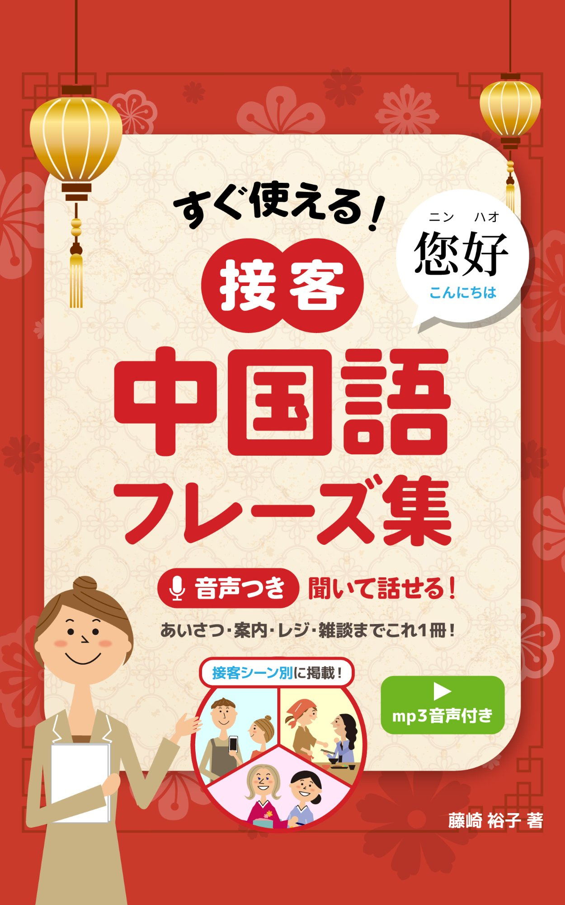
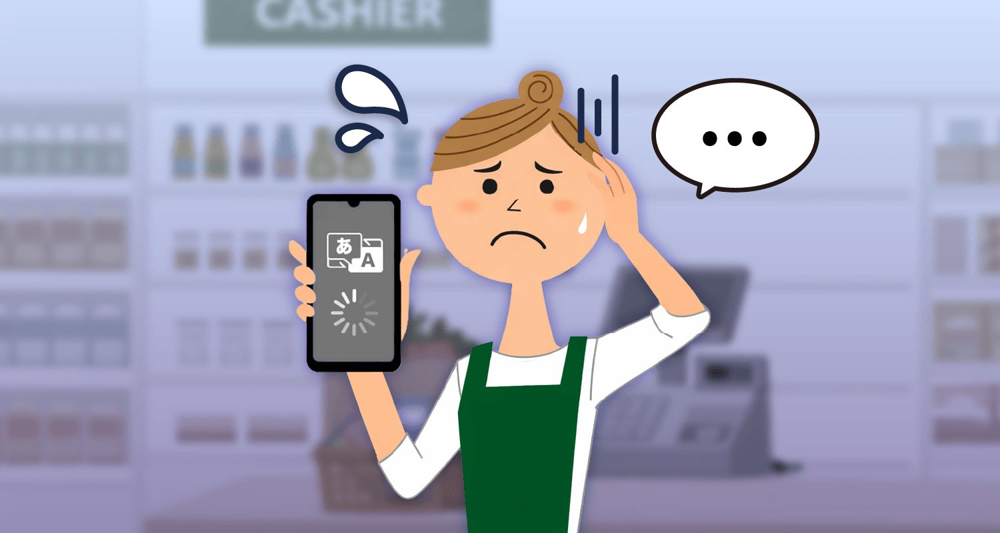
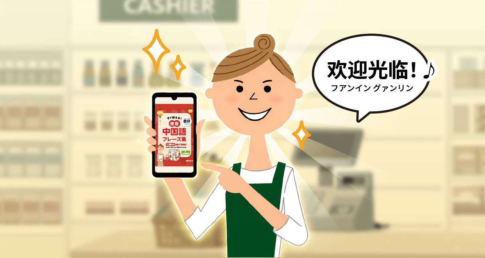

<!DOCTYPE html>
<html lang="ja">
<head>
  <meta charset="UTF-8">
  <meta name="viewport" content="width=device-width, initial-scale=1.0">
  <title>すぐ使える！接客中国語フレーズ集｜音声つき</title>
  <meta name="description" content="文法不要。開いた瞬間、接客成立。1,709の音声付き中国語フレーズで、接客の一瞬の沈黙を解消。Kindle好評発売中。">
  <meta property="og:title" content="すぐ使える！接客中国語フレーズ集">
  <meta property="og:description" content="文法不要。開いた瞬間、接客成立。音声付き中国語フレーズ集。">
  <meta property="og:type" content="website">
  <link rel="icon" href="data:image/svg+xml,<svg xmlns='http://www.w3.org/2000/svg' viewBox='0 0 100 100'><text y='.9em' font-size='90'>📖</text></svg>">
  <script src="https://cdnjs.cloudflare.com/ajax/libs/react/18.2.0/umd/react.production.min.js"></script>
  <script src="https://cdnjs.cloudflare.com/ajax/libs/react-dom/18.2.0/umd/react-dom.production.min.js"></script>
  <script src="https://cdnjs.cloudflare.com/ajax/libs/babel-standalone/7.23.9/babel.min.js"></script>
</head>
<body style="margin:0">
  <div id="root"></div>
  <script type="text/babel">
    const { useState, useRef, useEffect } = React;

const AUDIO_BASE = "https://books.real-chinese.org/sekkyaku/audio/";
const KINDLE_URL = "#kindle-purchase";
const CHAPTERS = [
  {id:"01",short:"基本",name:"接客の基本表現",icon:"🗣️",catCount:9,trackCount:29,fileCount:313},
  {id:"02",short:"会話",name:"お客様と会話が弾む表現",icon:"💬",catCount:5,trackCount:11,fileCount:131},
  {id:"03",short:"会計",name:"お会計",icon:"💰",catCount:13,trackCount:19,fileCount:253},
  {id:"04",short:"飲食",name:"飲食店全般",icon:"🍽️",catCount:10,trackCount:28,fileCount:347},
  {id:"05",short:"販売",name:"販売業全般",icon:"🛒",catCount:8,trackCount:32,fileCount:278},
  {id:"06",short:"服飾",name:"服飾・装飾品",icon:"👗",catCount:6,trackCount:10,fileCount:162},
  {id:"07",short:"食品",name:"食品",icon:"🍎",catCount:3,trackCount:4,fileCount:42},
  {id:"08",short:"化粧品",name:"化粧品・スキンケア",icon:"💄",catCount:2,trackCount:5,fileCount:57},
  {id:"09",short:"家電",name:"家電製品",icon:"📱",catCount:1,trackCount:2,fileCount:38},
  {id:"10",short:"薬局",name:"ドラッグストア・薬局",icon:"💊",catCount:4,trackCount:5,fileCount:88}
];

const SCENES = [
  {icon:"icon-register.png",label:"販売・レジ",desc:"袋の有料化、在庫確認、セール案内",ch:"第5章"},
  {icon:"icon-apparel.png",label:"アパレル",desc:"試着、サイズ直し、素材紹介",ch:"第6章"},
  {icon:"icon-cosme.png",label:"化粧品・ドラッグストア",desc:"お試し、免税、薬の説明",ch:"第8・10章"},
  {icon:"icon-restaurant.png",label:"飲食店・居酒屋",desc:"注文、メニュー説明、アレルギー",ch:"第4章"},
  {icon:"icon-facility.png",label:"施設案内",desc:"トイレ、Wi-Fi、充電、営業時間",ch:"第1章"},
  {icon:"icon-trouble.png",label:"トラブル対応",desc:"忘れ物、病気、クレーム",ch:"第1章"}
];

const FAQ = [
  {q:"中国語を習ったことがないけど使える？",a:"はい。本書は中国語の学習経験がゼロの方を想定しています。すべてのフレーズにカタカナ読みと音声がついているので、見て・聞いて・真似るだけで接客に使えます。完璧な発音は不要です。"},
  {q:"接客中にパッと出てこなそうで不安…",a:"本書は1ページ1シーン完結の設計です。スマホで該当ページを開き、画面を見せたり指差したりするだけでもOK。「完璧に話す」より「伝わる」ことを優先しています。"},
  {q:"スマホでも音声をダウンロードできる？",a:"はい。本ページからZIP形式で一括ダウンロードできます。章・カテゴリ別と全一括の2種類を用意。ダウンロード後はファイルアプリで解凍してお使いください。"},
  {q:"Kindle Unlimitedで読める？",a:"はい、Kindle Unlimited会員の方は追加料金なしでお読みいただけます。会員でない方は¥1,180でご購入いただけます。"},
  {q:"2015年出版の『リアル中国語フレーズ1500』との違いは？",a:"本書は2015年版をベースに、電子書籍に最適化して再編集したものです。レイアウトの刷新、音声のウェブ再生対応、フレーズの追加・更新を行い、1,500以上のフレーズと1,709の音声ファイルを収録しています。"}
];

const css = `
@import url('https://fonts.googleapis.com/css2?family=Noto+Sans+JP:wght@400;500;700;900&family=Zen+Maru+Gothic:wght@700;900&display=swap');
:root {
  --red: #C41E24;
  --red-light: #E8383D;
  --red-soft: #D94550;
  --red-bg: #FFF0F0;
  --navy: #1B2A4A;
  --navy-light: #2D4A7A;
  --yellow: #F5A623;
  --yellow-light: #FFF3D6;
  --cream: #FFF9F0;
  --cream-mid: #FDF3E7;
  --cream-dark: #F5EDE0;
  --warm-white: #FFFCF8;
  --gray: #6B7280;
  --gray-light: #F7F5F2;
  --text: #2D2319;
  --text-sub: #6B5E52;
}
* { margin:0; padding:0; box-sizing:border-box; }
html { scroll-behavior: smooth; }
body { font-family: 'Noto Sans JP', sans-serif; background: var(--cream); color: var(--text); -webkit-font-smoothing: antialiased; }

.zen { font-family: 'Zen Maru Gothic', 'Noto Sans JP', sans-serif; }

/* Header - compact navy, only element with dark bg */
.header { position:fixed; top:0; left:0; right:0; z-index:100; background:rgba(27,42,74,0.95); backdrop-filter:blur(8px); padding:10px 16px; display:flex; align-items:center; justify-content:space-between; }
.header-title { color:white; font-size:13px; font-weight:700; line-height:1.3; }
.header-btns { display:flex; gap:8px; }
.header-btn { padding:6px 12px; border-radius:6px; font-size:11px; font-weight:700; border:none; cursor:pointer; text-decoration:none; display:inline-block; }
.btn-audio { background:var(--yellow); color:var(--navy); }
.btn-buy { background:var(--red); color:white; }

/* Hero - warm cream base with red accents (book cover feel) */
.hero { padding:72px 20px 32px; background: linear-gradient(180deg, var(--cream-mid) 0%, var(--cream) 100%); position:relative; overflow:hidden; }
.hero::before { content:''; position:absolute; top:-60px; right:-60px; width:200px; height:200px; background:var(--red); border-radius:50%; opacity:0.07; }
.hero::after { content:''; position:absolute; bottom:-40px; left:-40px; width:160px; height:160px; background:var(--yellow); border-radius:50%; opacity:0.08; }
.hero-deco { position:absolute; top:58px; right:12px; width:48px; height:48px; background:var(--red); border-radius:50%; opacity:0.12; }
.hero-badge { display:inline-block; background:var(--red); color:white; font-size:11px; font-weight:700; padding:4px 12px; border-radius:20px; margin-bottom:12px; }
.hero h1 { color:var(--navy); font-size:24px; font-weight:900; line-height:1.5; margin-bottom:8px; }
.hero h1 .highlight { color:var(--red); background:linear-gradient(transparent 60%, rgba(245,166,35,0.25) 60%); }
.hero .sub { color:var(--text-sub); font-size:14px; line-height:1.7; margin-bottom:20px; }
.hero-ctas { display:flex; flex-direction:column; gap:10px; margin-bottom:20px; }
.cta-main { display:block; text-align:center; padding:14px; border-radius:10px; font-weight:700; font-size:15px; text-decoration:none; border:none; cursor:pointer; }
.cta-buy { background: linear-gradient(135deg, var(--red) 0%, var(--red-soft) 100%); color:white; box-shadow: 0 4px 15px rgba(196,30,36,0.25); }
.cta-audio { background:white; color:var(--red); border:2px solid var(--red); }
.hero-skip { text-align:center; padding:12px; background:var(--yellow-light); border-radius:8px; margin-top:4px; border:1px solid rgba(245,166,35,0.3); }
.hero-skip a { color:var(--navy); font-size:13px; font-weight:700; text-decoration:none; }
.hero-stats { display:flex; gap:16px; justify-content:center; margin-top:20px; flex-wrap:wrap; }
.stat { text-align:center; background:white; padding:10px 14px; border-radius:10px; box-shadow:0 2px 8px rgba(0,0,0,0.05); }
.stat-num { color:var(--red); font-size:22px; font-weight:900; display:block; }
.stat-label { color:var(--text-sub); font-size:11px; }

/* 3D Book Mockup */
.book-scene { perspective:1200px; display:flex; align-items:center; justify-content:center; }
.book { width:130px; height:195px; position:relative; transform-style:preserve-3d; transform:rotateY(-28deg) rotateX(4deg); cursor:pointer; animation:book-float 4s ease-in-out infinite; }
.book:hover { animation:none; transform:rotateY(-12deg) rotateX(2deg) translateY(-5px); }
@keyframes book-float { 0%,100%{transform:rotateY(-28deg) rotateX(4deg) translateY(0)} 50%{transform:rotateY(-28deg) rotateX(4deg) translateY(-6px)} }
.book__cover { position:absolute; width:100%; height:100%; backface-visibility:hidden; transform:translateZ(12px); border-radius:1px 4px 4px 1px; overflow:hidden; box-shadow:5px 5px 20px rgba(0,0,0,0.15),1px 1px 3px rgba(0,0,0,0.1); }
.book__cover img { width:100%; height:100%; object-fit:cover; display:block; }
.book__cover::after { content:''; position:absolute; top:0; left:0; width:100%; height:100%; background:linear-gradient(115deg,rgba(255,255,255,0) 0%,rgba(255,255,255,0) 30%,rgba(255,255,255,0.12) 45%,rgba(255,255,255,0.25) 50%,rgba(255,255,255,0.12) 55%,rgba(255,255,255,0) 70%,rgba(255,255,255,0) 100%); pointer-events:none; }
.book__spine { position:absolute; width:24px; height:100%; left:0; transform:rotateY(-90deg) translateX(-12px) translateZ(0); background:linear-gradient(to right,#8B1A1A 0%,#B22222 30%,#CD2626 50%,#B22222 70%,#8B1A1A 100%); border-radius:2px 0 0 2px; }
.book__spine::before { content:''; position:absolute; top:5%; left:50%; transform:translateX(-50%); width:1px; height:90%; background:rgba(255,255,255,0.08); }
.book__back { position:absolute; width:100%; height:100%; transform:translateZ(-12px); background:linear-gradient(135deg,#C62828 0%,#B71C1C 50%,#A01515 100%); border-radius:1px 4px 4px 1px; box-shadow:-2px 2px 10px rgba(0,0,0,0.2); }
.book__pages-top { position:absolute; width:calc(100% - 2px); height:24px; top:0; left:1px; transform:rotateX(90deg) translateY(-12px); background:linear-gradient(to bottom,#f8f4ec,#ede7db); background-image:repeating-linear-gradient(to right,transparent,transparent 1px,rgba(180,170,155,0.2) 1px,rgba(180,170,155,0.2) 2px); }
.book__pages-bottom { position:absolute; width:calc(100% - 2px); height:24px; bottom:0; left:1px; transform:rotateX(-90deg) translateY(12px); background:linear-gradient(to top,#f8f4ec,#ede7db); background-image:repeating-linear-gradient(to right,transparent,transparent 1px,rgba(180,170,155,0.2) 1px,rgba(180,170,155,0.2) 2px); }
.book__pages-right { position:absolute; width:24px; height:calc(100% - 2px); right:-1px; top:1px; transform:rotateY(90deg) translateX(12px); background:linear-gradient(to left,#f8f4ec,#ede7db); background-image:repeating-linear-gradient(to bottom,transparent,transparent 1px,rgba(180,170,155,0.15) 1px,rgba(180,170,155,0.15) 2px); }
.book__shadow { position:absolute; bottom:-20px; left:50%; transform:translateX(-50%); width:90%; height:15px; background:radial-gradient(ellipse at center,rgba(0,0,0,0.18) 0%,rgba(0,0,0,0.08) 40%,transparent 70%); filter:blur(6px); z-index:-1; }

/* Before After */
.ba-section { padding:40px 16px; background:var(--warm-white); }
.section-title { font-size:20px; font-weight:900; text-align:center; margin-bottom:8px; line-height:1.4; color:var(--navy); }
.section-subtitle { font-size:13px; color:var(--text-sub); text-align:center; margin-bottom:28px; }
.ba-card { border-radius:12px; padding:20px; margin-bottom:16px; }
.ba-before { background: linear-gradient(135deg, #EDE9E4 0%, #E2DDD6 100%); border-left: 4px solid #A09890; }
.ba-after { background: linear-gradient(135deg, #FFF0F0 0%, #FFE4E4 100%); border-left: 4px solid var(--red); }
.ba-label { font-size:11px; font-weight:700; text-transform:uppercase; letter-spacing:1px; margin-bottom:10px; display:flex; align-items:center; gap:6px; }
.ba-before .ba-label { color:#8A8078; }
.ba-after .ba-label { color:var(--red); }
.ba-item { font-size:14px; line-height:1.7; margin-bottom:6px; padding-left:8px; }

/* Features - warm cream bg with red accent cards */
.features { padding:40px 16px; background:var(--cream-mid); }
.features .section-title { color:var(--navy); }
.feature-card { background:white; border:1px solid rgba(196,30,36,0.1); border-radius:12px; padding:20px; margin-bottom:14px; box-shadow:0 2px 8px rgba(0,0,0,0.04); }
.feature-num { display:inline-block; background:var(--red); color:white; width:28px; height:28px; border-radius:50%; text-align:center; line-height:28px; font-size:13px; font-weight:900; margin-bottom:10px; }
.feature-card h3 { font-size:16px; font-weight:900; color:var(--red); margin-bottom:8px; line-height:1.4; }
.feature-card p { font-size:13px; color:var(--text-sub); line-height:1.7; }

/* Scenes */
.scenes { padding:40px 16px; background:var(--warm-white); }
.scene-grid { display:grid; grid-template-columns: 1fr 1fr; gap:10px; }
.scene-card { background:white; border-radius:10px; padding:14px; text-align:center; box-shadow: 0 2px 8px rgba(0,0,0,0.05); border:1px solid rgba(0,0,0,0.04); cursor:pointer; transition: transform 0.2s, box-shadow 0.2s; }
.scene-card:active { transform:scale(0.97); box-shadow: 0 2px 12px rgba(196,30,36,0.15); }
.scene-icon { margin-bottom:6px; line-height:1; }
.scene-label { font-size:13px; font-weight:700; color:var(--navy); margin-bottom:4px; }
.scene-desc { font-size:11px; color:var(--text-sub); line-height:1.4; }
.scene-ch { font-size:10px; color:var(--red); font-weight:700; margin-top:6px; }

/* Author */
.author { padding:40px 16px; background:var(--cream); }
.author-card { border-radius:12px; overflow:hidden; border:1px solid rgba(0,0,0,0.06); }
.author-header { background:var(--red); padding:16px; display:flex; align-items:center; gap:12px; }
.author-avatar { width:52px; height:52px; border-radius:50%; background:white; display:flex; align-items:center; justify-content:center; font-size:22px; flex-shrink:0; }
.author-name { color:white; font-size:15px; font-weight:700; }
.author-role { color:rgba(255,255,255,0.85); font-size:12px; }
.author-body { padding:16px; background:white; font-size:13px; line-height:1.8; color:#555; }
.author-highlight { background:linear-gradient(transparent 60%, rgba(245,166,35,0.3) 60%); font-weight:700; }
.author-stats { display:flex; gap:8px; flex-wrap:wrap; margin-top:12px; }
.author-stat { background:var(--cream); padding:6px 10px; border-radius:6px; font-size:11px; font-weight:700; color:var(--navy); }

/* CTA Mid */
.cta-mid { padding:32px 16px; background:linear-gradient(135deg, var(--red) 0%, var(--red-soft) 100%); text-align:center; }
.cta-mid h2 { color:white; font-size:18px; font-weight:900; margin-bottom:6px; }
.cta-mid p { color:rgba(255,255,255,0.9); font-size:13px; margin-bottom:16px; }
.cta-mid-btn { display:inline-block; background:white; color:var(--red); font-size:15px; font-weight:700; padding:14px 40px; border-radius:10px; text-decoration:none; box-shadow:0 4px 15px rgba(0,0,0,0.15); }
.cta-mid-price { color:rgba(255,255,255,0.85); font-size:12px; margin-top:10px; }

/* Audio Section */
.audio-section { padding:40px 16px; background:var(--cream-dark); }
.audio-section .section-title { color:var(--navy); }
.dl-row { display:flex; gap:10px; margin-bottom:20px; }
.dl-btn { flex:1; padding:12px; border-radius:8px; border:2px solid var(--red); background:white; color:var(--red); font-weight:700; font-size:12px; text-align:center; cursor:pointer; }
.dl-btn.primary { background:var(--red); color:white; border-color:var(--red); }
.ch-tabs { display:flex; overflow-x:auto; gap:6px; padding-bottom:8px; margin-bottom:16px; -webkit-overflow-scrolling:touch; scrollbar-width:none; }
.ch-tabs::-webkit-scrollbar { display:none; }
.ch-tab { flex-shrink:0; padding:8px 14px; border-radius:8px; background:white; border:1px solid #ddd; font-size:12px; font-weight:700; cursor:pointer; white-space:nowrap; color:var(--text); transition:all 0.2s; }
.ch-tab.active { background:var(--red); color:white; border-color:var(--red); }
.cat-accordion { background:white; border-radius:10px; margin-bottom:8px; overflow:hidden; box-shadow:0 1px 4px rgba(0,0,0,0.05); }
.cat-header { display:flex; align-items:center; justify-content:space-between; padding:12px 14px; cursor:pointer; font-size:13px; font-weight:700; color:var(--text); }
.cat-header:active { background:var(--cream); }
.cat-badge { background:var(--red-bg); padding:2px 8px; border-radius:10px; font-size:11px; color:var(--red); font-weight:500; }
.cat-arrow { transition:transform 0.2s; font-size:10px; color:var(--text-sub); }
.cat-arrow.open { transform:rotate(180deg); }
.cat-body { border-top:1px solid #f0ebe5; }
.track-group { padding:8px 14px; border-bottom:1px solid #f5f0ea; }
.track-name { font-size:12px; font-weight:700; color:var(--navy); margin-bottom:6px; padding:4px 0; }
.track-files { display:flex; flex-direction:column; gap:3px; }
.file-btn { width:100%; height:auto; min-height:32px; border-radius:6px; border:1px solid #e0d8d0; background:var(--warm-white); font-size:12px; display:flex; align-items:center; gap:6px; padding:6px 10px; cursor:pointer; color:var(--text); font-weight:500; transition:all 0.15s; text-align:left; line-height:1.3; }
.file-btn:active, .file-btn.playing { background:var(--red); color:white; border-color:var(--red); }

/* How to use */
.howto { padding:40px 16px; background:var(--warm-white); }
.howto-card { background:var(--cream); border-radius:12px; padding:20px; margin-bottom:12px; border:1px solid rgba(0,0,0,0.04); }
.howto-num { display:inline-block; background:var(--red); color:white; padding:2px 10px; border-radius:6px; font-size:12px; font-weight:700; margin-bottom:8px; }
.howto-card h3 { font-size:15px; font-weight:700; margin-bottom:8px; color:var(--navy); }
.howto-steps { font-size:13px; line-height:1.8; color:var(--text-sub); }

/* FAQ */
.faq-section { padding:40px 16px; background:var(--cream-mid); }
.faq-item { background:white; border-radius:10px; margin-bottom:8px; overflow:hidden; box-shadow:0 1px 4px rgba(0,0,0,0.04); }
.faq-q { display:flex; align-items:center; gap:10px; padding:14px; cursor:pointer; font-weight:700; font-size:14px; color:var(--text); }
.faq-q:active { background:var(--cream); }
.faq-badge { flex-shrink:0; background:var(--red); color:white; width:24px; height:24px; border-radius:6px; display:flex; align-items:center; justify-content:center; font-size:11px; font-weight:900; }
.faq-a { padding:0 14px 14px 48px; font-size:13px; line-height:1.7; color:var(--text-sub); }

/* Footer - only dark element besides header */
.footer { padding:32px 16px; background:var(--navy); color:rgba(255,255,255,0.6); text-align:center; font-size:11px; line-height:1.8; }
.footer a { color:var(--yellow); text-decoration:none; }

/* Sticky Player */
.sticky-player { position:fixed; bottom:0; left:0; right:0; background:white; padding:10px 16px; display:flex; align-items:center; gap:10px; z-index:90; box-shadow:0 -2px 12px rgba(0,0,0,0.1); border-top:2px solid var(--red); }
.sp-info { flex:1; min-width:0; }
.sp-track { color:var(--navy); font-size:12px; font-weight:700; white-space:nowrap; overflow:hidden; text-overflow:ellipsis; }
.sp-file { color:var(--text-sub); font-size:10px; }
.sp-btn { width:36px; height:36px; border-radius:50%; background:var(--red); color:white; border:none; font-size:16px; cursor:pointer; flex-shrink:0; display:flex; align-items:center; justify-content:center; }
.sp-close { width:28px; height:28px; border-radius:50%; background:var(--gray-light); color:var(--text-sub); border:none; font-size:14px; cursor:pointer; flex-shrink:0; display:flex; align-items:center; justify-content:center; }

@keyframes fadeUp { from { opacity:0; transform:translateY(20px); } to { opacity:1; transform:translateY(0); } }
.fade-up { animation: fadeUp 0.5s ease-out forwards; }

/* === Desktop (768px+) === */
@media (min-width: 768px) {
  /* Global: constrain content width */
  .hero, .ba-section, .features, .scenes, .author, .faq-section, .audio-section, .final-cta { max-width:720px; margin-left:auto; margin-right:auto; }

  /* Hero: center text + book */
  .hero { padding:88px 40px 40px; }
  .hero-content { justify-content:center; align-items:center; gap:40px; }
  .hero h1 { font-size:28px; }
  .book { width:180px; height:270px; }
  .book__cover { transform:translateZ(16px); }
  .book__spine { width:32px; transform:rotateY(-90deg) translateX(-16px) translateZ(0); }
  .book__back { transform:translateZ(-16px); }
  .book__pages-top { height:32px; transform:rotateX(90deg) translateY(-16px); }
  .book__pages-bottom { height:32px; transform:rotateX(-90deg) translateY(16px); }
  .book__pages-right { width:32px; transform:rotateY(90deg) translateX(16px); }
  .hero-ctas { flex-direction:row; justify-content:center; }
  .cta-main { min-width:240px; }

  /* Before/After: constrain image width */
  .ba-img { max-width:60%; display:block; margin-left:auto; margin-right:auto; }

  /* Scenes: 3 columns on desktop */
  .scene-grid { grid-template-columns: 1fr 1fr 1fr; }

  /* Section titles slightly larger */
  .section-title { font-size:24px; }
}

/* === Wide desktop (1024px+) === */
@media (min-width: 1024px) {
  .hero, .ba-section, .features, .scenes, .author, .faq-section, .audio-section, .final-cta { max-width:880px; }
  .hero h1 { font-size:32px; }
  .hero .sub { font-size:16px; }
  .book { width:200px; height:300px; }
}
`;

// Compact audio data for the player
const AUDIO_DATA = [
  {id:"01",n:"第1章_接客の基本表現",c:[{id:"1",n:"まず覚えたい必須のフレーズ",t:[{id:"TRACK001",n:"来客・見送り時の基本のあいさつ",ct:12},{id:"TRACK002",n:"待っている様子のお客様に",ct:2},{id:"TRACK003",n:"道を通してもらう時",ct:1},{id:"TRACK004",n:"お客様への呼びかけ",ct:1,ab:true},{id:"TRACK005",n:"聞き取れない時",ct:11},{id:"TRACK006",n:"わからない・答えられない時の対応",ct:8},{id:"TRACK007",n:"お待たせする時",ct:6}]},{id:"2",n:"重要フレーズ〜返答",t:[{id:"TRACK008",n:"重要フレーズ〜返答",ct:20}]},{id:"3",n:"重要フレーズ〜感謝・お詫び・お断り",t:[{id:"TRACK009",n:"感謝を表す",ct:4},{id:"TRACK010",n:"お詫びする",ct:8},{id:"TRACK011",n:"拒否・お断り",ct:3}]},{id:"4",n:"重要フレーズ〜接客応対",t:[{id:"TRACK012",n:"重要フレーズ〜接客応対",ct:11,ab:true}]},{id:"5",n:"店内のご案内",t:[{id:"TRACK013",n:"お手洗いのご案内",ct:3,ab:true},{id:"TRACK014",n:"設備・サービスのご案内",ct:6,ab:true},{id:"TRACK015",n:"バリエーション(場所の説明)",ct:10},{id:"TRACK016",n:"営業時間・定休日",ct:4,ab:true},{id:"TRACK017",n:"バリエーション(営業時間)",ct:8},{id:"TRACK018",n:"わかると対応できるお客様の一言",ct:12,ab:true},{id:"TRACK019",n:"バリエーション(店内施設)",ct:17}]},{id:"6",n:"トラブル・病気",t:[{id:"TRACK020",n:"忘れ物の対応",ct:7,ab:true},{id:"TRACK021",n:"迷子の対応",ct:8,ab:true},{id:"TRACK022",n:"病気・ケガの対応",ct:4,ab:true},{id:"TRACK023",n:"バリエーション(病気・ケガ)",ct:7},{id:"TRACK024",n:"盗難・遺失",ct:8,ab:true},{id:"TRACK025",n:"バリエーション(万引き・緊急事態)",ct:10}]},{id:"7",n:"マナー・注意",t:[{id:"TRACK026",n:"マナー・注意",ct:17}]},{id:"8",n:"クレーム対応など",t:[{id:"TRACK027",n:"クレーム対応など",ct:6}]},{id:"9",n:"電話応対",t:[{id:"TRACK028",n:"電話応対",ct:10,ab:true},{id:"TRACK029",n:"バリエーション(電話対応)",ct:15}]}]},
  {id:"02",n:"第2章_お客様と会話が弾む表現",c:[{id:"1",n:"あいづち・返答の表現",t:[{id:"TRACK030",n:"あいづち・返答の表現",ct:18}]},{id:"2",n:"相手をほめる",t:[{id:"TRACK031",n:"相手をほめる",ct:15}]},{id:"3",n:"謙遜する",t:[{id:"TRACK032",n:"謙遜する",ct:5}]},{id:"4",n:"わかると対応できるお客様の一言",t:[{id:"TRACK033",n:"わかると対応できるお客様の一言",ct:13,ab:true}]},{id:"5",n:"雑談・おもてなし",t:[{id:"TRACK034",n:"写真撮影",ct:3,ab:true},{id:"TRACK035",n:"バリエーション(写真撮影)",ct:10},{id:"TRACK036",n:"お客様の話題",ct:7,ab:true},{id:"TRACK037",n:"旅行の話題",ct:11,ab:true},{id:"TRACK038",n:"初対面の一般的な話題",ct:3,ab:true},{id:"TRACK039",n:"バリエーション(天気の話題)",ct:5},{id:"TRACK040",n:"中国への関心を表すフレーズ",ct:4}]}]},
  {id:"03",n:"第3章_お会計",c:[{id:"1",n:"レジに案内する",t:[{id:"TRACK041",n:"レジのご案内",ct:4,ab:true},{id:"TRACK042",n:"バリエーション(レジ・会計)",ct:15},{id:"TRACK043",n:"購入内容の確認",ct:2,ab:true},{id:"TRACK044",n:"バリエーション(購入確認)",ct:4},{id:"TRACK045",n:"金額を伝える",ct:2,ab:true},{id:"TRACK046",n:"バリエーション(金額)",ct:4}]},{id:"2",n:"支払い方法の確認",t:[{id:"TRACK047",n:"支払い方法の確認",ct:5,ab:true},{id:"TRACK048",n:"バリエーション(支払い方法)",ct:11}]},{id:"3",n:"現金払い",t:[{id:"TRACK049",n:"現金払い",ct:5,ab:true}]},{id:"4",n:"クレジットカード払い",t:[{id:"TRACK050",n:"カードの利用",ct:4,ab:true},{id:"TRACK051",n:"カードが使えない",ct:5,ab:true},{id:"TRACK052",n:"バリエーション(カード払い)",ct:11}]},{id:"5",n:"ポイントカード・クーポン",t:[{id:"TRACK053",n:"ポイントカード・クーポン",ct:9,ab:true},{id:"TRACK054",n:"バリエーション(ポイント)",ct:14}]},{id:"6",n:"レシート・領収書の発行",t:[{id:"TRACK055",n:"レシート・領収書の発行",ct:5,ab:true}]},{id:"7",n:"持ち歩き時間の確認",t:[{id:"TRACK056",n:"持ち歩き時間の確認",ct:2,ab:true}]},{id:"8",n:"包装方法",t:[{id:"TRACK057",n:"包装方法（自宅用・プレゼント用）",ct:24}]},{id:"9",n:"アンケート・サンプル",t:[{id:"TRACK058",n:"アンケート・サンプル",ct:7}]},{id:"10",n:"配送",t:[{id:"TRACK059",n:"配送",ct:3,ab:true},{id:"TRACK060",n:"バリエーション(配送)",ct:5}]},{id:"11",n:"免税サービス",t:[{id:"TRACK061",n:"免税サービス",ct:23}]},{id:"12",n:"返品・交換時",t:[{id:"TRACK062",n:"返品・交換時",ct:6,ab:true},{id:"TRACK063",n:"バリエーション(返品・交換)",ct:14}]},{id:"13",n:"値引き交渉の対応",t:[{id:"TRACK064",n:"値引き交渉の対応",ct:5,ab:true},{id:"TRACK065",n:"バリエーション(値引き交渉)",ct:7}]}]},
  {id:"04",n:"第4章_飲食店全般",c:[{id:"1",n:"ご来店時",t:[{id:"TRACK066",n:"人数の確認",ct:2,ab:true},{id:"TRACK067",n:"席の希望確認",ct:8,ab:true},{id:"TRACK068",n:"バリエーション(ご来店時)",ct:10},{id:"TRACK069",n:"喫煙席・禁煙席",ct:3,ab:true},{id:"TRACK070",n:"満席の時",ct:5,ab:true},{id:"TRACK071",n:"バリエーション(満席時)",ct:7},{id:"TRACK072",n:"ご予約・制限つきのご案内",ct:6,ab:true},{id:"TRACK073",n:"バリエーション(ご予約)",ct:11}]},{id:"2",n:"席に案内する",t:[{id:"TRACK074",n:"席に案内する",ct:8,ab:true},{id:"TRACK075",n:"バリエーション(席のご案内)",ct:6}]},{id:"3",n:"メニューを渡す",t:[{id:"TRACK076",n:"メニューを渡す",ct:3,ab:true},{id:"TRACK077",n:"バリエーション(メニュー案内)",ct:10},{id:"TRACK078",n:"バリエーション(食べ・飲み放題)",ct:7},{id:"TRACK079",n:"バリエーション(ビュッフェ)",ct:3}]},{id:"4",n:"オーダーを取る",t:[{id:"TRACK080",n:"注文を聞く",ct:8,ab:true},{id:"TRACK081",n:"好みに合わせる",ct:6,ab:true},{id:"TRACK082",n:"苦手なものを聞く",ct:4,ab:true},{id:"TRACK083",n:"おすすめの一品",ct:3,ab:true},{id:"TRACK084",n:"バリエーション(オーダー)",ct:23}]},{id:"5",n:"わかると対応できるお客様の一言",t:[{id:"TRACK085",n:"わかると対応できるお客様の一言",ct:7,ab:true},{id:"TRACK086",n:"バリエーション(お客様の要望)",ct:15}]},{id:"6",n:"商品提供・お食事中",t:[{id:"TRACK087",n:"商品提供・お食事中",ct:9,ab:true},{id:"TRACK088",n:"バリエーション(商品の提供)",ct:20}]},{id:"7",n:"下げる時の顧客サービス",t:[{id:"TRACK089",n:"下げる時の顧客サービス",ct:3,ab:true}]},{id:"8",n:"お問い合わせ・クレーム",t:[{id:"TRACK090",n:"お問い合わせ・クレーム",ct:5,ab:true},{id:"TRACK091",n:"バリエーション(マナー・クレーム)",ct:9}]},{id:"9",n:"居酒屋・バー",t:[{id:"TRACK092",n:"居酒屋・バー",ct:13,ab:true},{id:"TRACK093",n:"バリエーション(居酒屋・バー)",ct:20}]},{id:"10",n:"ファーストフード",t:[{id:"TRACK094",n:"ファーストフード",ct:10,ab:true}]}]},
  {id:"05",n:"第5章_販売業全般",c:[{id:"1",n:"店内のお客様に声を掛ける",t:[{id:"TRACK095",n:"来店の動機・目的をつかむ",ct:8},{id:"TRACK096",n:"試用をすすめる",ct:8},{id:"TRACK097",n:"バリエーション(試供品)",ct:4},{id:"TRACK098",n:"用途を訪ねる",ct:4,ab:true},{id:"TRACK099",n:"バリエーション(具体的な目的)",ct:5},{id:"TRACK100",n:"好み・必要な量をたずねる",ct:5,ab:true},{id:"TRACK101",n:"商品のご案内",ct:11,ab:true},{id:"TRACK102",n:"バリエーション(商品のご案内)",ct:13}]},{id:"2",n:"わかると対応できるお客様の一言",t:[{id:"TRACK103",n:"わかると対応できるお客様の一言",ct:13,ab:true},{id:"TRACK104",n:"バリエーション(商品について知りたい)",ct:28}]},{id:"3",n:"サービス・製品をアピール",t:[{id:"TRACK105",n:"人気をアピールする",ct:15},{id:"TRACK106",n:"希少性をアピールする",ct:13}]},{id:"4",n:"セール・キャンペーン",t:[{id:"TRACK107",n:"お値打ち感をアピール",ct:4,ab:true},{id:"TRACK108",n:"バリエーション(お値打ち感)",ct:5},{id:"TRACK109",n:"バリエーション(セール情報)",ct:11},{id:"TRACK110",n:"今買うのがおすすめ",ct:4},{id:"TRACK111",n:"品質・耐性をアピール",ct:2},{id:"TRACK112",n:"色・デザインが豊富",ct:3},{id:"TRACK113",n:"品質の良さをアピール",ct:4},{id:"TRACK114",n:"高級感をアピール",ct:3},{id:"TRACK115",n:"耐久性をアピール",ct:2},{id:"TRACK116",n:"使いやすさをアピール",ct:6},{id:"TRACK117",n:"贈答・お土産にオススメ",ct:7}]},{id:"5",n:"積極的なアピール",t:[{id:"TRACK118",n:"積極的なアピール",ct:6,ab:true}]},{id:"6",n:"商品の在庫",t:[{id:"TRACK119",n:"在庫状況",ct:3,ab:true},{id:"TRACK120",n:"バリエーション",ct:3},{id:"TRACK121",n:"在庫を確認する",ct:6,ab:true},{id:"TRACK122",n:"在庫確認(バリエーション)",ct:4},{id:"TRACK123",n:"取り寄せ",ct:3,ab:true},{id:"TRACK124",n:"取り寄せ(バリエーション)",ct:6}]},{id:"7",n:"保証",t:[{id:"TRACK125",n:"保証",ct:7}]},{id:"8",n:"商品の注意点を伝える",t:[{id:"TRACK126",n:"商品の注意点を伝える",ct:7}]}]},
  {id:"06",n:"第6章_服飾・装飾品",c:[{id:"1",n:"素材を紹介",t:[{id:"TRACK127",n:"素材を紹介",ct:3,ab:true}]},{id:"2",n:"試着",t:[{id:"TRACK128",n:"試着のご案内",ct:19,ab:true},{id:"TRACK129",n:"バリエーション(試着時)",ct:18},{id:"TRACK130",n:"試着のフィット感",ct:9,ab:true},{id:"TRACK131",n:"バリエーション(試着した感想)",ct:21}]},{id:"3",n:"ほめる（服飾）",t:[{id:"TRACK132",n:"ほめる（服飾）",ct:9}]},{id:"4",n:"便利なセールスフレーズ",t:[{id:"TRACK133",n:"言えたら便利なセールスフレーズ",ct:24}]},{id:"5",n:"お手入れ方法について",t:[{id:"TRACK134",n:"お手入れ方法について",ct:8}]},{id:"6",n:"サイズ直し",t:[{id:"TRACK135",n:"サイズ直し",ct:3,ab:true},{id:"TRACK136",n:"バリエーション(裾上げ・お直し)",ct:14}]}]},
  {id:"07",n:"第7章_食品",c:[{id:"1",n:"試食を促す",t:[{id:"TRACK137",n:"試食を促す",ct:3}]},{id:"2",n:"食べごろ・賞味期限",t:[{id:"TRACK138",n:"食べごろ・賞味期限",ct:10}]},{id:"3",n:"アピール",t:[{id:"TRACK139",n:"アピール",ct:6,ab:true},{id:"TRACK140",n:"バリエーション(健康志向の方へ)",ct:17}]}]},
  {id:"08",n:"第8章_化粧品・スキンケア",c:[{id:"1",n:"お試し・案内",t:[{id:"TRACK141",n:"お試し",ct:7,ab:true},{id:"TRACK142",n:"使用方法・量",ct:3,ab:true}]},{id:"2",n:"ヒアリング",t:[{id:"TRACK143",n:"お悩み",ct:3,ab:true},{id:"TRACK144",n:"特徴・効能の説明",ct:3,ab:true},{id:"TRACK145",n:"バリエーション(化粧品)",ct:25}]}]},
  {id:"09",n:"第9章_家電製品",c:[{id:"1",n:"家電製品のご案内",t:[{id:"TRACK146",n:"家電製品のご案内",ct:12,ab:true},{id:"TRACK147",n:"バリエーション(家電)",ct:14}]}]},
  {id:"10",n:"第10章_ドラッグストア・薬局",c:[{id:"1",n:"飲み方・飲む量",t:[{id:"TRACK148",n:"飲み方・飲む量",ct:7,ab:true}]},{id:"2",n:"ヒアリング",t:[{id:"TRACK149",n:"ヒアリング",ct:5,ab:true},{id:"TRACK150",n:"バリエーション(痛み・症状)",ct:25}]},{id:"3",n:"薬のタイプ",t:[{id:"TRACK151",n:"薬のタイプ",ct:10,ab:true},{id:"TRACK152",n:"バリエーション(薬局の対応)",ct:11}]},{id:"4",n:"サプリ・健康食品",t:[{id:"TRACK153",n:"サプリ・健康食品",ct:4,ab:true}]}]}
];

const PHRASE_MAP = {"TRACK001/01.mp3":"いらっしゃいませ。","TRACK001/02.mp3":"ご自由にご覧ください。","TRACK001/03.mp3":"どうぞごゆっくりご覧ください。","TRACK001/04.mp3":"ご来店は初めてでいらっしゃますか。","TRACK001/05.mp3":"ご来訪ありがとうございました。","TRACK001/06.mp3":"またお越し下さい。","TRACK001/07.mp3":"おはようございます。","TRACK001/08.mp3":"こんにちは。","TRACK001/09.mp3":"こんばんは。","TRACK001/10.mp3":"さようなら。","TRACK001/11.mp3":"よろしくお願いします。","TRACK001/12.mp3":"お気をつけて。","TRACK002/01.mp3":"お伺い致しましょうか。","TRACK002/02.mp3":"ただいま参ります。","TRACK003/01.mp3":"失礼します。","TRACK004/01a.mp3":"お客様、こちらはお客様のではないですか。","TRACK004/01b.mp3":"あ、持ってくのを忘れるところでした。ど…","TRACK005/01.mp3":"もう一度言ってください。","TRACK005/02.mp3":"もう少しゆっくり話して頂けますか。","TRACK005/03.mp3":"大きな声で言ってください。","TRACK005/04.mp3":"[紙などに]書いてください。","TRACK005/05.mp3":"指でさしてください。","TRACK005/06.mp3":"（聞いて）わかりません。","TRACK005/07.mp3":"日本語が話せますか。","TRACK005/08.mp3":"日本語を話せる人はいますか。","TRACK005/09.mp3":"中国語が話せません。","TRACK005/10.mp3":"中国語が少しできます。","TRACK005/11.mp3":"中国語ができる人を呼んできますね。","TRACK006/01.mp3":"分かる者に聞いてまいります。","TRACK006/02.mp3":"責任者を呼んで参ります。","TRACK006/03.mp3":"担当者が不在です。","TRACK006/04.mp3":"（見て）わかりません。","TRACK006/05.mp3":"誠に恐縮ですが分かりかねます。","TRACK006/06.mp3":"ご確認致します。","TRACK006/07.mp3":"ちょっと聞いてまいります。","TRACK006/08.mp3":"お調べいたします。","TRACK007/01.mp3":"少々お待ち下さい。","TRACK007/02.mp3":"こちらでしばらくお待ちください。","TRACK007/03.mp3":"店内をご覧になってお待ちください。","TRACK007/04.mp3":"おかけになって少々お待ちください。","TRACK007/05.mp3":"お待たせしました。","TRACK007/06.mp3":"お待たせして申し訳ございません。","TRACK008/01.mp3":"はい。","TRACK008/02.mp3":"いいえ。","TRACK008/03.mp3":"あります。","TRACK008/04.mp3":"ありません。","TRACK008/05.mp3":"かしこまりました。","TRACK008/06.mp3":"分かりました。","TRACK008/07.mp3":"了解しました。","TRACK008/08.mp3":"わかりません。","TRACK008/09.mp3":"わかりません。（知りません）","TRACK008/10.mp3":"知っています。","TRACK008/11.mp3":"よろしいですか。","TRACK008/12.mp3":"いいですよ。","TRACK008/13.mp3":"だめです。","TRACK008/14.mp3":"大丈夫です。（かまわない）","TRACK008/15.mp3":"大丈夫です。（慌てることはない）","TRACK008/16.mp3":"大丈夫です。（大した事じゃない）","TRACK008/17.mp3":"大丈夫です。（問題ありません）","TRACK008/18.mp3":"どういたしまして。（それほどではない）","TRACK008/19.mp3":"どういたしまして。（感謝には及びません)","TRACK008/20.mp3":"どういたしまして。（ご遠慮なく）","TRACK009/01.mp3":"ありがとうございます。","TRACK009/02.mp3":"ありがとう！","TRACK009/03.mp3":"どうもありがとうございます。","TRACK009/04.mp3":"ご親切にありがとうございます。","TRACK010/01.mp3":"すいません。","TRACK010/02.mp3":"ごめんなさい。","TRACK010/03.mp3":"申し訳ございません。","TRACK010/04.mp3":"大変申し訳ありません。","TRACK010/05.mp3":"本当に申し訳ありません。","TRACK010/06.mp3":"ご迷惑をおかけし、申し訳ありません。","TRACK010/07.mp3":"以後気をつけます。","TRACK010/08.mp3":"お手数をおかけします。","TRACK011/01.mp3":"申し訳ありませんができかねます。","TRACK011/02.mp3":"無理な相談です。","TRACK011/03.mp3":"申し訳ないですが…。","TRACK012/01a.mp3":"どういったご用件ですか。","TRACK012/01b.mp3":"遺失物取扱い所はどこですか。","TRACK012/02a.mp3":"このワンピース、ファスナーが開かないん…","TRACK012/02b.mp3":"私にさせてください。","TRACK012/03a.mp3":"このお菓子がもっと欲しいんだけど。","TRACK012/03b.mp3":"手伝いますよ。あと何個必要ですか。","TRACK012/04a.mp3":"このネックレスを見せてください。","TRACK012/04b.mp3":"かしこまりました。","TRACK012/05a.mp3":"インターネットがつながりません。","TRACK012/05b.mp3":"私が見てみましょう。","TRACK012/06a.mp3":"タバコを吸ってもいいですか。","TRACK012/06b.mp3":"おかまいなく、お好きにどうぞ。","TRACK012/07a.mp3":"すいません、近くの地下鉄へはどう行きま…","TRACK012/07b.mp3":"まっすぐ進めば見えますよ。","TRACK012/08a.mp3":"どうぞ。","TRACK012/08b.mp3":"あ、どうも。","TRACK012/09a.mp3":"このサンプルは全部頂けるんですか。","TRACK012/09b.mp3":"はい、お受け取りください。","TRACK012/10a.mp3":"次の方、こちらへどうぞ。","TRACK012/10b.mp3":"はい。","TRACK012/11a.mp3":"どうぞご自由に。","TRACK012/11b.mp3":"どうも。","TRACK013/01a.mp3":"お手洗いはどちらですか。","TRACK013/01b.mp3":"お手洗いはあちらです。","TRACK013/02a.mp3":"近くにお手洗いはありますか。","TRACK013/02b.mp3":"この店を出て右に曲がったところです。","TRACK013/03a.mp3":"お手洗いは何階にありますか。","TRACK013/03b.mp3":"階下の２階にあります。","TRACK014/01a.mp3":"この近くに電源カフェはありますか。","TRACK014/01b.mp3":"ご案内するので、私について来てください。","TRACK014/02a.mp3":"近くにコピーができるところがありますか。","TRACK014/02b.mp3":"ちょっと分からないので、案内所にご案内…","TRACK014/03a.mp3":"ベビー休憩室はどこにありますか。","TRACK014/03b.mp3":"フロアマップでご案内します。","TRACK014/04a.mp3":"こちらは通路ですので、この場所を空けて…","TRACK014/04b.mp3":"わかりました。","TRACK014/05a.mp3":"中国語のパンフレットをどうぞ。","TRACK014/05b.mp3":"どうも。","TRACK014/06a.mp3":"中国語版のパンフレットはありますか。","TRACK014/06b.mp3":"大変申し訳ありませんが、パンフレットは…","TRACK015/01.mp3":"出口はあちらです。","TRACK015/02.mp3":"階段の後ろにあります。","TRACK015/03.mp3":"1番奥にあります。","TRACK015/04.mp3":"右に曲がってください。","TRACK015/05.mp3":"左に曲がってください。","TRACK015/06.mp3":"まっすぐ行ってください。","TRACK015/07.mp3":"〜売り場はこちらです。","TRACK015/08.mp3":"まっすぐ行って左に曲がったところです。","TRACK015/09.mp3":"４階です。","TRACK015/10.mp3":"突き当たりを左です。","TRACK016/01a.mp3":"営業時間を教えてください。","TRACK016/01b.mp3":"24時間営業です。","TRACK016/02a.mp3":"お店は何時にオープンしますか。","TRACK016/02b.mp3":"朝９時に開店します。","TRACK016/03a.mp3":"何時まで営業していますか。","TRACK016/03b.mp3":"10時まで営業しています。","TRACK016/04a.mp3":"定休日はありますか。","TRACK016/04b.mp3":"年中無休です。","TRACK017/01.mp3":"平日の営業は何時までですか。","TRACK017/02.mp3":"祝祭日は営業していますか。","TRACK017/03.mp3":"閉店の時間になりました。","TRACK017/04.mp3":"本日の営業時間は終了しました。","TRACK017/05.mp3":"土日祝日は23時までの営業です。","TRACK017/06.mp3":"平日の営業時間は11時から8時までです。","TRACK017/07.mp3":"営業時間は朝７時から夜10時までです。","TRACK017/08.mp3":"定休日は第3火曜日です。","TRACK018/01a.mp3":"免税カウンターは何階ですか。","TRACK018/01b.mp3":"免税カウンターは地下一階です。","TRACK018/02a.mp3":"ここは充電ができますか。","TRACK018/02b.mp3":"はい、問題ありません。","TRACK018/03a.mp3":"携帯の充電が切れそうなんです。充電器は…","TRACK018/03b.mp3":"ありますよ、どうぞ充電してください。","TRACK018/04a.mp3":"すいません、近くにATMはありますか？","TRACK018/04b.mp3":"一階の入り口にありますよ。","TRACK018/05a.mp3":"小銭ある？両替してくれる？","TRACK018/05b.mp3":"あります、いくら両替しましょうか。","TRACK018/06a.mp3":"今日の日本円のレートはいくらですか。","TRACK018/06b.mp3":"現在のレートは一元19、3円です。","TRACK018/07a.mp3":"ペットは同伴できますか。","TRACK018/07b.mp3":"誠に恐縮ですが、ペットの同伴はご遠慮し…","TRACK018/08a.mp3":"ペンをお借りできますか。","TRACK018/08b.mp3":"いいですよ。","TRACK018/09a.mp3":"ここはインターネットが使える？","TRACK018/09b.mp3":"はい、ワイヤレスインターネットが使えま…","TRACK018/10a.mp3":"Wi-Fiのパスワードは？","TRACK018/10b.mp3":"２をふたつと８がよっつです。","TRACK018/11a.mp3":"このアプリは有料ですか？","TRACK018/11b.mp3":"いえ、無料のアプリです。","TRACK018/12a.mp3":"タバコを吸っていいですか。","TRACK018/12b.mp3":"どうぞ、おかまいなく。","TRACK019/01.mp3":"手荷物預かりサービスはありますか。","TRACK019/02.mp3":"コインロッカーは入り口のそばにあります。","TRACK019/03.mp3":"硬貨は使用後に戻ります。","TRACK019/04.mp3":"こちらは中国語のフロアガイドです。","TRACK019/05.mp3":"こちらに注意事項が書かれています。","TRACK019/06.mp3":"パンフレットは無料です。","TRACK019/07.mp3":"地図は有料です。","TRACK019/08.mp3":"こちらでベビーカーを貸し出しています。","TRACK019/09.mp3":"車椅子を無料で貸し出しています。","TRACK019/10.mp3":"カゴをご利用ください。","TRACK019/11.mp3":"お買上商品のお預かりを承ります。","TRACK019/12.mp3":"お足元にお気をつけください。","TRACK019/13.mp3":"滑りやすいので気をつけてください。","TRACK019/14.mp3":"こちらの傘をお使いください。","TRACK019/15.mp3":"お会計は各フロアでお願いします。","TRACK019/16.mp3":"エスカレーターをご利用ください。","TRACK019/17.mp3":"カートは出入口付近にご返却ください。","TRACK020/01a.mp3":"お客様！忘れ物です。","TRACK020/01b.mp3":"あ、どうも。","TRACK020/02a.mp3":"これはどなたのですか。","TRACK020/02b.mp3":"私のです。","TRACK020/03a.mp3":"こちらはお客様のですか。","TRACK020/03b.mp3":"いえ、私のじゃないです。","TRACK020/04a.mp3":"忘れ物はございませんか。","TRACK020/04b.mp3":"大丈夫です。","TRACK020/05a.mp3":"携帯を忘れたので、保管しておいてもらえ…","TRACK020/05b.mp3":"わかりました。見つかったらご連絡いたし…","TRACK020/06a.mp3":"こちらがお探しのものですか。","TRACK020/06b.mp3":"そうそう！まさにこれです！","TRACK020/07a.mp3":"どこに置き忘れたか覚えていらっしゃいま…","TRACK020/07b.mp3":"いいえ、覚えていません。","TRACK021/01a.mp3":"お連れ様のお名前を教えてください。","TRACK021/01b.mp3":"彼女は李樹紅と言います。","TRACK021/02a.mp3":"お連れ様の特徴教えてください。","TRACK021/02b.mp3":"水玉模様のコートを着ています。","TRACK021/03a.mp3":"お子様は何歳ですか。","TRACK021/03b.mp3":"６歳です。","TRACK021/04a.mp3":"男の子ですか女の子ですか。","TRACK021/04b.mp3":"男の子です。","TRACK021/05a.mp3":"迷子なの？","TRACK021/05b.mp3":"うん。","TRACK021/06a.mp3":"誰と来たの？","TRACK021/06b.mp3":"ママと来たの。","TRACK021/07a.mp3":"一緒に事務所に行こうね。","TRACK021/07b.mp3":"うん。ママの迎えを待ってる。","TRACK021/08a.mp3":"自分の名前は言える？","TRACK021/08b.mp3":"うん、私の名前はチョウ・フウです。","TRACK022/01a.mp3":"指を切ってしまいました。","TRACK022/01b.mp3":"絆創膏をお持ちしますね。","TRACK022/02a.mp3":"救急車を呼びましょうか。","TRACK022/02b.mp3":"結構です。","TRACK022/03a.mp3":"どこか気分が悪いんですか。","TRACK022/03b.mp3":"吐きそうです。","TRACK022/04a.mp3":"どこが痛いんですか。","TRACK022/04b.mp3":"お腹が痛いです。","TRACK023/01.mp3":"病院に行ったほうがいいですよ。","TRACK023/02.mp3":"こちらの絆創膏をお使いください。","TRACK023/03.mp3":"お医者さんを呼びますね。","TRACK023/04.mp3":"お水をお持ちしましょうか。","TRACK023/05.mp3":"ここで安静にしていてください。","TRACK023/06.mp3":"こちらで横になってください。","TRACK023/07.mp3":"どうかお大事に。","TRACK024/01a.mp3":"何かなくされたのですか。","TRACK024/01b.mp3":"はい、鍵をなくしました。","TRACK024/02a.mp3":"子供のおもちゃを忘れたんですが、こちら…","TRACK024/02b.mp3":"どんな形のものですか。","TRACK024/03a.mp3":"私の帽子が見当たらないんです。","TRACK024/03b.mp3":"どんな色のものですか。","TRACK024/04a.mp3":"ネックレスをなくしちゃいました。","TRACK024/04b.mp3":"どこでなくされたんですか。","TRACK024/05a.mp3":"何がなくなったんですか。","TRACK024/05b.mp3":"パスポートをなくしました。","TRACK024/06a.mp3":"財布をなくしました。","TRACK024/06b.mp3":"クレジットカード会社に連絡してください。","TRACK024/07a.mp3":"財布を盗まれました。","TRACK024/07b.mp3":"どこで盗まれたんですか。","TRACK024/08a.mp3":"ひったくりに遭いました。","TRACK024/08b.mp3":"何が入っていましたか。","TRACK025/01.mp3":"警察に通報します。","TRACK025/02.mp3":"お会計はお済みですか。","TRACK025/03.mp3":"鞄の中を見せてください。","TRACK025/04.mp3":"パスポートを見せていただけますか。","TRACK025/05.mp3":"ご本人確認のためお名前をいただけますか。","TRACK025/06.mp3":"救急車を呼んでください！","TRACK025/07.mp3":"非常口から外に出てください。","TRACK025/08.mp3":"落ち着いてください。","TRACK025/09.mp3":"もう大丈夫です。安心してください。","TRACK025/10.mp3":"助けて！","TRACK026/01.mp3":"フラッシュ撮影はご遠慮ください。","TRACK026/02.mp3":"店内での撮影はご遠慮ください。","TRACK026/03.mp3":"携帯電話のご使用はご遠慮ください。","TRACK026/04.mp3":"携帯はマナーモードにしてください。","TRACK026/05.mp3":"他のお客様のご迷惑になります。","TRACK026/06.mp3":"お静かに願います。","TRACK026/07.mp3":"ご購入前の商品は開封しないでください。","TRACK026/08.mp3":"商品の袋を開けないでください。","TRACK026/09.mp3":"商品には素手で触れないでください。","TRACK026/10.mp3":"食べ歩きはご遠慮ください。","TRACK026/11.mp3":"備品はお持ち帰りにならないようお願いし…","TRACK026/12.mp3":"床に痰を吐かないでください。","TRACK026/13.mp3":"大声を出さないでください。","TRACK026/14.mp3":"ゴミを床に捨てないでください。","TRACK026/15.mp3":"そんなことしないでください。","TRACK026/16.mp3":"貴重品は自己管理をお願いします。","TRACK026/17.mp3":"こちらは関係者以外立ち入りができません。","TRACK027/01.mp3":"お客様のおっしゃる通りです。","TRACK027/02.mp3":"今後このようなことがないよう留意します。","TRACK027/03.mp3":"ご意見を今後の参考にさせて頂きます。","TRACK027/04.mp3":"全てのお客様にこうした対応させて頂いて…","TRACK027/05.mp3":"直ぐに対応いたします。","TRACK027/06.mp3":"わたしどもの手違いです。","TRACK028/01a.mp3":"お声が聞き取りにくいので、もう少し大き…","TRACK028/01b.mp3":"わかりました。","TRACK028/02a.mp3":"もしもし、どちらさまですか。","TRACK028/02b.mp3":"コウと申します。ちょっとお伺いしたいん…","TRACK028/03a.mp3":"（彼は）いつお戻りになりますか。","TRACK028/03b.mp3":"午後3時ごろです。","TRACK028/04a.mp3":"メッセージをどうぞ。","TRACK028/04b.mp3":"いえ、けっこうです。","TRACK028/05a.mp3":"すいません、（電話を）かけ間違えました。","TRACK028/05b.mp3":"構いません。","TRACK028/06a.mp3":"聞こえていますか？","TRACK028/06b.mp3":"すいません、お電話が遠いようなのでもう…","TRACK028/07a.mp3":"どのようなご用件ですか。","TRACK028/07b.mp3":"今日そちらにケータイを忘れたんですが、…","TRACK028/08a.mp3":"すみません、はっきりと聞き取れません。","TRACK028/08b.mp3":"わかりました、ではもう一度言います。","TRACK028/09a.mp3":"席を予約をしたいんですが。","TRACK028/09b.mp3":"わかりました。担当者におつなぎいたしま…","TRACK028/10a.mp3":"どなたにおかけですか。","TRACK028/10b.mp3":"先ほどお電話をいただいたみたいなんです…","TRACK029/01.mp3":"番号違いだと思います。","TRACK029/02.mp3":"伝言をお願いします。","TRACK029/03.mp3":"あいにく担当者は不在にしております。","TRACK029/04.mp3":"折り返しお電話ください。","TRACK029/05.mp3":"お手数ですが後でかけなおしてくださいま…","TRACK029/06.mp3":"できるだけ早くご連絡をお願いします。","TRACK029/07.mp3":"あとでまたお電話します。","TRACK029/08.mp3":"後でかけなおしてもよろしいでしょうか。","TRACK029/09.mp3":"確認して後でお電話いたします。","TRACK029/10.mp3":"こちらからかけなおしてよろしいですか。","TRACK029/11.mp3":"お電話を回しますので、少々お待ち下さい。","TRACK029/12.mp3":"今は別の電話に出ております。","TRACK029/13.mp3":"あいにく今、席をはずしております。","TRACK029/14.mp3":"外出中です。","TRACK029/15.mp3":"お電話をいただきありがとうございました。","TRACK030/01.mp3":"そうだね／そうだよ。","TRACK030/02.mp3":"そうです。","TRACK030/03.mp3":"そうなの？","TRACK030/04.mp3":"そうでしょ。","TRACK030/05.mp3":"いいね／いいよ！","TRACK030/06.mp3":"ほんと？","TRACK030/07.mp3":"当ててみて。","TRACK030/08.mp3":"確かに。","TRACK030/09.mp3":"私もそう思います。","TRACK030/10.mp3":"あなたは（どう）？","TRACK030/11.mp3":"どう思いますか。","TRACK030/12.mp3":"なかなか悪くないでしょ？","TRACK030/13.mp3":"いいアイディアですね！","TRACK030/14.mp3":"そうではありません。","TRACK030/15.mp3":"結構です。","TRACK030/16.mp3":"そういう意味じゃないんです。","TRACK030/17.mp3":"今必要なんです。","TRACK030/18.mp3":"差し支えなければ。","TRACK031/01.mp3":"スタイルがいいですね。","TRACK031/02.mp3":"お若く見えますね。","TRACK031/03.mp3":"可愛いですね。","TRACK031/04.mp3":"お綺麗ですね。","TRACK031/05.mp3":"日本語が上手ですね。","TRACK031/06.mp3":"綺麗な手提げかばんですね！","TRACK031/07.mp3":"上品な腕時計をされていますね。","TRACK031/08.mp3":"素敵な水晶をされていますね。","TRACK031/09.mp3":"かっこいいね！","TRACK031/10.mp3":"笑顔が可愛いですね。","TRACK031/11.mp3":"お肌が綺麗ですね。","TRACK031/12.mp3":"賢いですね。","TRACK031/13.mp3":"足が長いですね。","TRACK031/14.mp3":"綺麗な髪ですね。","TRACK031/15.mp3":"羨ましいです。","TRACK032/01.mp3":"照れるなぁ。","TRACK032/02.mp3":"褒めすぎです。","TRACK032/03.mp3":"褒められすぎて恥ずかしいです。","TRACK032/04.mp3":"恐れ入ります。","TRACK032/05.mp3":"皆さんのおかげです。","TRACK033/01a.mp3":"これは何ですか。","TRACK033/01b.mp3":"これは爪切りです、日本製ですよ。","TRACK033/02a.mp3":"あれは何ですか。","TRACK033/02b.mp3":"あれは今話題のホワイトパックです。","TRACK033/03a.mp3":"このジューサーはどうやって使うんですか。","TRACK033/03b.mp3":"（わたしから）ご説明致します。","TRACK033/04a.mp3":"書き方がわからないので、教えて頂けます…","TRACK033/04b.mp3":"はい、お手伝いします。","TRACK033/05a.mp3":"まだ間に合いますか。","TRACK033/05b.mp3":"今ならまだ間に合います。","TRACK033/06a.mp3":"買いたいと思っている目薬が見つからない…","TRACK033/06b.mp3":"わかりました。商品名を教えてください。","TRACK033/07a.mp3":"この温水洗浄便座は、まだ有りますか。","TRACK033/07b.mp3":"あります、只今お持ちします。","TRACK033/08a.mp3":"すいませんが、いま何時ですか。","TRACK033/08b.mp3":"今、二時です。","TRACK033/09a.mp3":"お手洗いはどこですか。","TRACK033/09b.mp3":"階段のそばです。","TRACK033/10a.mp3":"あれが欲しいです。","TRACK033/10b.mp3":"どれですか。指で指し示してください。","TRACK033/11a.mp3":"栓抜きはありますか。","TRACK033/11b.mp3":"あります、（私が）開けますよ。","TRACK033/12a.mp3":"この新発売の香水はいつ販売されますか。","TRACK033/12b.mp3":"こちらは明日入荷します。","TRACK033/13a.mp3":"この掃除機は自分の声で操作ができます。","TRACK033/13b.mp3":"どうして？すごいね！","TRACK034/01a.mp3":"写真をお撮りしますよ。","TRACK034/01b.mp3":"どうも！ここのボタンを押してください。","TRACK034/02a.mp3":"記念撮影はいかがですか。","TRACK034/02b.mp3":"後ろの建物を入れてください。","TRACK034/03a.mp3":"あと何枚か撮ってくれませんか。","TRACK034/03b.mp3":"はい、もう数枚写真を撮りますね。","TRACK035/01.mp3":"写真を撮ってもいい？","TRACK035/02.mp3":"もう1枚写真をお撮りしましょう。","TRACK035/03.mp3":"ブレてしまいました。","TRACK035/04.mp3":"1、2、3、チーズ。","TRACK035/05.mp3":"笑ってください。","TRACK035/06.mp3":"写真を撮ります。","TRACK035/07.mp3":"私たちで一緒に写真を撮りましょう。","TRACK035/08.mp3":"逆光です。","TRACK035/09.mp3":"目をつぶりましたよ。","TRACK035/10.mp3":"写真を確かめてもらえますか。","TRACK036/01a.mp3":"どちらのご出身ですか。","TRACK036/01b.mp3":"わたしは北京出身です。","TRACK036/02a.mp3":"中国人ですか。","TRACK036/02b.mp3":"はい、中国人です。","TRACK036/03a.mp3":"お名前（姓）は？","TRACK036/03b.mp3":"コウと言います。","TRACK036/04a.mp3":"血液型は何ですか。","TRACK036/04b.mp3":"（私は）AB型です。","TRACK036/05a.mp3":"おいくつでいらっしゃいますか。","TRACK036/05b.mp3":"今年58歳です。","TRACK036/06a.mp3":"身長の高さは？","TRACK036/06b.mp3":"180センチくらいです。","TRACK036/07a.mp3":"何人家族ですか。","TRACK036/07b.mp3":"両親と妹と私の四人家族です。","TRACK037/01a.mp3":"日本には旅行で来られているんですか。","TRACK037/01b.mp3":"仕事で来ました。","TRACK037/02a.mp3":"日本を訪れるのは今回が初めてですか。","TRACK037/02b.mp3":"はい、初めてです。","TRACK037/03a.mp3":"日本ではどこに行ったことがありますか。","TRACK037/03b.mp3":"大阪と名古屋です。","TRACK037/04a.mp3":"今日はどちらに観光に行かれたんですか。","TRACK037/04b.mp3":"浅草に行きました。この後お台場に行く予…","TRACK037/05a.mp3":"今回のご旅行は何日間滞在のご予定ですか。","TRACK037/05b.mp3":"全部で７日間です。","TRACK037/06a.mp3":"国慶節期間の休みは何日間ですか？","TRACK037/06b.mp3":"私たちの会社は3日間の休みです。","TRACK037/07a.mp3":"いつ日本に来こられたんですか。","TRACK037/07b.mp3":"昨日来たばかりです。","TRACK037/08a.mp3":"お一人で来られているのですか。","TRACK037/08b.mp3":"友達と一緒に来ました。","TRACK037/09a.mp3":"ご家族でいらしているんですか。","TRACK037/09b.mp3":"はい、子供と両親と５人で来ています。","TRACK037/10a.mp3":"団体旅行で来られたんですか。","TRACK037/10b.mp3":"いえ、友人と数人で来ました。","TRACK037/11a.mp3":"北海道に行ったことがありますか。","TRACK037/11b.mp3":"2回行ったことがあります。","TRACK038/01a.mp3":"明日の天気はどう？","TRACK038/01b.mp3":"明日は雨です。","TRACK038/02a.mp3":"今日は何度ですか。","TRACK038/02b.mp3":"二十数度くらいです。","TRACK038/03a.mp3":"いいお天気ですね。","TRACK038/03b.mp3":"本当ですね。","TRACK039/01.mp3":"雨、止まないですね。","TRACK039/02.mp3":"今日は蒸し暑いですね！","TRACK039/03.mp3":"雪が降ってきました。","TRACK039/04.mp3":"今日は暖かいですね。","TRACK039/05.mp3":"寒くなりましたね。","TRACK040/01.mp3":"中国語を勉強しています。","TRACK040/02.mp3":"中国には行ったことがありません。","TRACK040/03.mp3":"中国は上海に一度行ったことがあります。","TRACK040/04.mp3":"北京に旅行に行ってみたいです。","TRACK041/01a.mp3":"どこで支払いますか？","TRACK041/01b.mp3":"お会計はあちらです。","TRACK041/02a.mp3":"並んでください。","TRACK041/02b.mp3":"あ、すみません。","TRACK041/03a.mp3":"割り込みしないで下さい。","TRACK041/03b.mp3":"もとから並んでたよ！","TRACK041/04a.mp3":"お客様、並んでますか？","TRACK041/04b.mp3":"ええ、並んでます。","TRACK042/01.mp3":"順番にご案内いたします。","TRACK042/02.mp3":"こちらに並んでください。","TRACK042/03.mp3":"後ろに並んでください。","TRACK042/04.mp3":"こちらに真っ直ぐにお並び下さい。","TRACK042/05.mp3":"列の最後尾にお並びください。","TRACK042/06.mp3":"足元のラインに沿ってお並びください。","TRACK042/07.mp3":"次にお待ちのお客様どうぞ。","TRACK042/08.mp3":"左側にずれてお待ち下さい。","TRACK042/09.mp3":"順番を守ってください。","TRACK042/10.mp3":"お客様、こちらのレジもご利用できます。","TRACK042/11.mp3":"お支払いはレジでお願いします。","TRACK042/12.mp3":"フロアごとに商品のご精算をお願いします。","TRACK042/13.mp3":"レジまでお越し頂けますか。","TRACK042/14.mp3":"整理券をお受け取りください。","TRACK042/15.mp3":"先にお会計をお願いします。","TRACK043/01a.mp3":"合計4点でよろしいですか。","TRACK043/01b.mp3":"はい、そうです。","TRACK043/02a.mp3":"箱を開けるので、商品の中身をご確認くだ…","TRACK043/02b.mp3":"分かりました。","TRACK044/01.mp3":"これを買います。","TRACK044/02.mp3":"これだけ買います。","TRACK044/03.mp3":"これは買いません。","TRACK044/04.mp3":"同じのをもう一つ下さい。","TRACK045/01a.mp3":"全部でいくらですか。","TRACK045/01b.mp3":"お会計は5100円です。","TRACK045/02a.mp3":"税込みですか？税別ですか？","TRACK045/03b.mp3":"（こちらは）税込み価格です。","TRACK046/01.mp3":"（こちらは）税別価格です。","TRACK046/02.mp3":"料金には消費税とサービス料が含まれてい…","TRACK046/03.mp3":"チップはいただいておりません。","TRACK046/04.mp3":"レジでの両替はご遠慮下さい。","TRACK047/01a.mp3":"お会計はご一緒ですか。","TRACK047/01b.mp3":"別々に勘定をお願いします。","TRACK047/02a.mp3":"別々にお支払いしますか。","TRACK047/02b.mp3":"いえ、一緒に払います。","TRACK047/03a.mp3":"元で支払えますか？","TRACK047/03b.mp3":"申し訳ありませんが、お支払いは円のみと…","TRACK047/04a.mp3":"お支払いはどうなさいますか。","TRACK047/04b.mp3":"銀聯カードは使えますか。","TRACK047/05a.mp3":"お支払いは現金ですか、カードですか。","TRACK047/05b.mp3":"現金で（支払います）。","TRACK048/01.mp3":"現金でのお支払いですか。","TRACK048/02.mp3":"お支払いは日本円でお願い致します。","TRACK048/03.mp3":"カードでお支払いしますか。","TRACK048/04.mp3":"カードでのお支払いも可能です。","TRACK048/05.mp3":"電子マネーは使えません。","TRACK048/06.mp3":"銀聯カードが使えます。","TRACK048/07.mp3":"カードによっては、ご利用頂けない場合も…","TRACK048/08.mp3":"カードをお返しします。","TRACK048/09.mp3":"このクーポンはご利用いただけません。","TRACK048/10.mp3":"お釣りを持って参りますのでお待ち下さい。","TRACK048/11.mp3":"おつりとレシートでございます。","TRACK049/01a.mp3":"ここはカード払いができますか。","TRACK049/01b.mp3":"すいません、ここは現金払いのみです。","TRACK049/02a.mp3":"200円のお返しでございます。お確かめく","TRACK049/02b.mp3":"はい。","TRACK049/03a.mp3":"一万円お預かり致します。","TRACK049/03b.mp3":"はい、そうです。","TRACK049/04a.mp3":"恐れ入りますが、あと100円足りません。","TRACK049/04b.mp3":"あ、すいません。","TRACK049/05a.mp3":"600円のお返しになります。","TRACK049/05b.mp3":"あと100円、お釣りが足りません。","TRACK050/01a.mp3":"どのカードが使えますか。","TRACK050/01b.mp3":"こちらの一覧の中にあるカードが使えます。","TRACK050/02a.mp3":"お支払いは一括払いでよろしいでしょうか。","TRACK050/02b.mp3":"分割でお願いできますか。","TRACK050/03a.mp3":"分割払いになさいますか。","TRACK050/03b.mp3":"一括でお願いします。","TRACK050/04a.mp3":"暗証番号を入力し、確認ボタンを押してく…","TRACK050/04b.mp3":"はい。","TRACK051/01a.mp3":"ご入力された暗証番号が違います。","TRACK051/01b.mp3":"じゃあもう一度試してみます。","TRACK051/02a.mp3":"パスワードを忘れました。","TRACK051/02b.mp3":"わかりました。こちらにサインをお願いし…","TRACK051/03a.mp3":"他のカードお持ちですか。","TRACK051/03b.mp3":"では現金でお願いします。","TRACK051/04a.mp3":"あいにく、こちらのカードはご利用頂けな…","TRACK051/04b.mp3":"では、こっちのカードはどうですか。","TRACK051/05a.mp3":"このカードは使えますか。","TRACK051/05b.mp3":"申し訳ございませんが、こちらのカードは…","TRACK052/01.mp3":"カードをお預かりします。","TRACK052/02.mp3":"デビットカードは利用可能ですか。","TRACK052/03.mp3":"お返しします。","TRACK052/04.mp3":"カードと控えでございます。","TRACK052/05.mp3":"お客様の控えです、どうぞ。","TRACK052/06.mp3":"期限が切れています。","TRACK052/07.mp3":"クレジットカードは1,000円未満のご…","TRACK052/08.mp3":"こちらのカードが限度額オーバーで使用で…","TRACK052/09.mp3":"このカードは無効です。","TRACK052/10.mp3":"カードにブロックがかかっています。","TRACK052/11.mp3":"カード会社にご確認ください。","TRACK053/01a.mp3":"会員カードはお持ちですか。","TRACK053/01b.mp3":"はい、これです。","TRACK053/02a.mp3":"会員カードをお作り致しましょうか。","TRACK053/02b.mp3":"では、お願いします。","TRACK053/03a.mp3":"ご入会をご希望ですか。","TRACK053/03b.mp3":"いえ、結構です。","TRACK053/04a.mp3":"入会金はいくらですか。","TRACK053/04b.mp3":"入会金は無料です。","TRACK053/05a.mp3":"年会費はかかりますか。","TRACK053/05b.mp3":"初年度無料です。","TRACK053/06a.mp3":"手数料はいくらですか。","TRACK053/06b.mp3":"手数料はかかりません。","TRACK053/07a.mp3":"ポイントをご利用になりますか。","TRACK053/07b.mp3":"はい、使います。","TRACK053/08a.mp3":"何ポイントご利用ですか。","TRACK053/08b.mp3":"ポイントを全部使います。","TRACK053/09a.mp3":"このクーポンは使えますか。","TRACK053/09b.mp3":"使用可能ですが、クーポンの併用はできま…","TRACK054/01.mp3":"カードのご提示で10%引きになります。","TRACK054/02.mp3":"カードを発行してください。","TRACK054/03.mp3":"ポイントは1年間有効です。","TRACK054/04.mp3":"有効期限は来年の12月までです。","TRACK054/05.mp3":"5,000円分のポイントがたまっていま…","TRACK054/06.mp3":"1ポイントからご利用いただけます。","TRACK054/07.mp3":"100ポイント単位で利用可能です。","TRACK054/08.mp3":"ポイントの明細でございます。","TRACK054/09.mp3":"免税品にはポイントがつきません。","TRACK054/10.mp3":"次回のご来店時にご利用ください。","TRACK054/11.mp3":"有効期限はありません。","TRACK054/12.mp3":"1,000円お買い上げごとに1つスタン…","TRACK054/13.mp3":"5000円お買い上げごとに抽選券を差し…","TRACK054/14.mp3":"スタンプが10個たまると1,000円分…","TRACK055/01a.mp3":"領収書はご入用ですか。","TRACK055/01b.mp3":"はい、ください。","TRACK055/02a.mp3":"領収書の宛名はいかが致しましょうか。","TRACK055/02b.mp3":"この名刺の会社名にしてください。","TRACK055/03a.mp3":"但し書きは商品代でよろしいですか。","TRACK055/03b.mp3":"かまいません。","TRACK055/04a.mp3":"こちらはお客様控えです。","TRACK055/04b.mp3":"はい。","TRACK055/05a.mp3":"領収書をお願いします。","TRACK055/05b.mp3":"承知しました。こちらが領収書です。","TRACK056/01a.mp3":"持ち歩きの時間はどれくらいですか。","TRACK056/01b.mp3":"一時間くらいです。","TRACK056/02a.mp3":"このチョコレートに保冷剤を付けますか？","TRACK056/02b.mp3":"お願いします。","TRACK057/01.mp3":"別々にお包みしましょうか。","TRACK057/02.mp3":"お包み致しましょうか。","TRACK057/03.mp3":"袋にお入れしますか。","TRACK057/04.mp3":"値札をお取りしますか。","TRACK057/05.mp3":"プレゼント用にラッピングしますか。","TRACK057/06.mp3":"リボンをかけしましょうか。","TRACK057/07.mp3":"プレゼント用ですか。","TRACK057/08.mp3":"一緒にお包みしてよろしいですか。","TRACK057/09.mp3":"レジ袋はご利用ですか。","TRACK057/10.mp3":"ラッピングは無料です。","TRACK057/11.mp3":"箱代は別途300円かかります。","TRACK057/12.mp3":"プレゼント包装は別途100円かかります。","TRACK057/13.mp3":"中身がわかるようにメモをおつけします。","TRACK057/14.mp3":"雨除けのビニールをおかけしますか。","TRACK057/15.mp3":"すぐにご使用になりますか。","TRACK057/16.mp3":"袋をひとつください。","TRACK057/17.mp3":"袋をもう一つ下さい。","TRACK057/18.mp3":"何枚か袋をください。","TRACK057/19.mp3":"小分け用の袋をご用意しますか。","TRACK057/20.mp3":"他の荷物もまとめてお入れしますか。","TRACK057/21.mp3":"荷物を一つの袋にまとめますか。","TRACK057/22.mp3":"袋は一緒にしてもよろしいですか。","TRACK057/23.mp3":"紙袋はご利用ですか？","TRACK057/24.mp3":"包装紙とリボンをお選びください。","TRACK058/01.mp3":"サンプルを一緒にお入れしたのでお試しく…","TRACK058/02.mp3":"どうぞ受け取りください。","TRACK058/03.mp3":"気に入っていただけると嬉しいです。","TRACK058/04.mp3":"差し上げます。","TRACK058/05.mp3":"無料（のもの）です。","TRACK058/06.mp3":"お持ち帰りいただけます。","TRACK058/07.mp3":"アンケート用紙を同封しますので、お時間…","TRACK059/01a.mp3":"配送してもらえますか。","TRACK059/01b.mp3":"はい。配送料は5000円です。","TRACK059/02a.mp3":"ホテルまでの配送が可能ですか。","TRACK059/02b.mp3":"できます、国内は配達無料です。","TRACK059/03a.mp3":"配送先に届くのはいつですか。","TRACK059/03b.mp3":"明後日のお届けですが、よろしいですか？","TRACK060/01.mp3":"海外への発送を承ります。","TRACK060/02.mp3":"何日で（荷物が）届きますか。","TRACK060/03.mp3":"着払いでお願いします。","TRACK060/04.mp3":"着払いには手数料がかかります。","TRACK060/05.mp3":"到着日時を指定できますか。","TRACK061/01.mp3":"免税サービスは行っておりません。","TRACK061/02.mp3":"免税サービスの受付はあちらになります。","TRACK061/03.mp3":"免税サービスをご希望ですか。","TRACK061/04.mp3":"パスポートを拝見できますか。","TRACK061/05.mp3":"用紙のこの部分にご記入ください。","TRACK061/06.mp3":"手続きは当日のみ受付いたします。","TRACK061/07.mp3":"こちらは手続きの案内です。","TRACK061/08.mp3":"あと1000円分のご購入で免税になりま…","TRACK061/09.mp3":"お会計の時にパスポートをご提示して頂く…","TRACK061/10.mp3":"税抜き10,001円以上のお買い上げで…","TRACK061/11.mp3":"手続きにはパスポートが必要です。","TRACK061/12.mp3":"パスポートをお持ちですか。","TRACK061/13.mp3":"免税範囲を超えています。","TRACK061/14.mp3":"消耗品は税抜き5,001円以上のお買い…","TRACK061/15.mp3":"消耗品は対象外でございます。","TRACK061/16.mp3":"コピーをとりますので少々待ちください。","TRACK061/17.mp3":"出国するまで開封しないでください。","TRACK061/18.mp3":"こちらは免税品ではありません。","TRACK061/19.mp3":"残りはこちらで記入します。","TRACK061/20.mp3":"こちらは免税対象品ではありません。","TRACK061/21.mp3":"このパスポートでは免税の対象となりませ…","TRACK061/22.mp3":"免税はお会計の後に別の場所で承ります。","TRACK061/23.mp3":"旅行者の方ですか。","TRACK062/01a.mp3":"この商品を返品したいんですが。","TRACK062/01b.mp3":"誠に恐縮ですが、返品はお受けしておりま…","TRACK062/02a.mp3":"この商品の返品をお願いします。","TRACK062/02b.mp3":"すみませんが、レシートはお持ちですか。","TRACK062/03a.mp3":"お取り替えとご返金どちらをご希望ですか。","TRACK062/03b.mp3":"返金をお願いします。","TRACK062/04a.mp3":"別のものと交換してもらえますか。","TRACK062/04b.mp3":"何か不都合な点がございましたか。","TRACK062/05a.mp3":"この商品を色違いに交換したいんですが。","TRACK062/05b.mp3":"パッケージは開封なさいましたか。","TRACK062/06a.mp3":"こちらの返品をお願いします。","TRACK062/06b.mp3":"申し訳ありませんが、返品交換は一切受け…","TRACK063/01.mp3":"商品を拝見いたします。","TRACK063/02.mp3":"不良品はお取替え致します。","TRACK063/03.mp3":"一度開封されているものは返品できません。","TRACK063/04.mp3":"洗濯した商品はご返品いただけません。","TRACK063/05.mp3":"返品交換にはレシートが必要です。","TRACK063/06.mp3":"使用済みの商品は返品できません。","TRACK063/07.mp3":"返品は2週間以内となっています。","TRACK063/08.mp3":"不良品以外はお断り申し上げます。","TRACK063/09.mp3":"お客様のお取り扱いが不適切だったようで…","TRACK063/10.mp3":"返品交換の際は1週間以内にレシートと一…","TRACK063/11.mp3":"新しいものとお取替え致します。","TRACK063/12.mp3":"同じものとお取り替え致します。","TRACK063/13.mp3":"代金の払い戻しを致します。","TRACK063/14.mp3":"差額を700円いただきます。","TRACK064/01a.mp3":"安くしてください。","TRACK064/01b.mp3":"すでに70%オフで販売しているので、こ…","TRACK064/02a.mp3":"割引はありますか。","TRACK064/02b.mp3":"あります、現金でのお支払いに限り割引い…","TRACK064/03a.mp3":"これは最低価格ですか。","TRACK064/03b.mp3":"はい、すでに一番安いです。","TRACK064/04a.mp3":"ちょっと安くならない？","TRACK064/04b.mp3":"こちらが最終価格でございます。","TRACK064/05a.mp3":"もうちょっと安くして！","TRACK064/05b.mp3":"値引きは出来ません。","TRACK065/01.mp3":"責任者に確認させてください。","TRACK065/02.mp3":"既に半額になっています。","TRACK065/03.mp3":"恐れ入りますが値引きはいたしかねます。","TRACK065/04.mp3":"こちらは割引対象外です。","TRACK065/05.mp3":"こちらは値下げ後の価格です。","TRACK065/06.mp3":"こちらは値下げ前の価格です。","TRACK065/07.mp3":"当店では値下げ交渉はご遠慮しています。","TRACK066/01a.mp3":"いらっしゃいませ。何名様ですか。","TRACK066/01b.mp3":"5名です。子供がいます。","TRACK066/02a.mp3":"４名様でよろしいですか。","TRACK066/02b.mp3":"後でもう一人くるので、５名席をお願いし…","TRACK067/01a.mp3":"お席のご希望はございますか。","TRACK067/01b.mp3":"できれば個室がいいです。","TRACK067/02a.mp3":"お席は離れても大丈夫ですか。","TRACK067/02b.mp3":"できるだけ一緒がいいです。","TRACK067/03a.mp3":"お子様用の椅子はご利用になりますか。","TRACK067/03b.mp3":"はい、お願いします。","TRACK067/04a.mp3":"お座敷になさいますか、テーブルになさい…","TRACK067/04b.mp3":"テーブルでお願いします。","TRACK067/05a.mp3":"喫煙席と禁煙席、どちらがよろしいでしょ…","TRACK067/05b.mp3":"どちらでもいいので、早く座れる方でお願…","TRACK067/06a.mp3":"喫煙席はありますか。","TRACK067/06b.mp3":"すみませんが、ただいま禁煙席しか空いて…","TRACK067/07a.mp3":"込み合いますと相席になりますがよろしい…","TRACK067/07b.mp3":"大丈夫です。","TRACK067/08a.mp3":"すぐに座りたいのですが、席は空いていま…","TRACK067/08b.mp3":"カウンター席なら空いています。","TRACK068/01.mp3":"ご案内致します。","TRACK068/02.mp3":"順番にご案内いたします。","TRACK068/03.mp3":"準備ができたらお呼びします。","TRACK068/04.mp3":"こちらへどうぞ。","TRACK068/05.mp3":"コートをお預かりしましょうか。","TRACK068/06.mp3":"お荷物はこちらに置いていただけますか。","TRACK068/07.mp3":"靴は靴箱にお入れ下さい。","TRACK068/08.mp3":"履物をぬいでおあがりください。","TRACK068/09.mp3":"靴をお脱ぎください。","TRACK068/10.mp3":"スリッパにお履き替えください。","TRACK069/01a.mp3":"喫煙席はありますか。","TRACK069/01b.mp3":"当店は全席禁煙です。","TRACK069/02a.mp3":"禁煙席はありますか。","TRACK069/02b.mp3":"あります、禁煙席は二階です。","TRACK069/03a.mp3":"おタバコはお吸いになりますか。","TRACK069/03b.mp3":"はい、灰皿をお願いします。","TRACK070/01a.mp3":"どのくらい待ちますか。","TRACK070/01b.mp3":"只今30分待ちでございます。","TRACK070/02a.mp3":"４名ですが、座れますか。","TRACK070/02b.mp3":"ただいま空席はございません。お席が空く…","TRACK070/03a.mp3":"すみません、二人なんですが席は空いてい…","TRACK070/03b.mp3":"申し訳ございません、只今満席です。","TRACK070/04a.mp3":"席は空きそうですか。","TRACK070/04b.mp3":"お客様は3番目です。今しばらくお待ち下…","TRACK070/05a.mp3":"お手数ですが、名前を書いてお待ち下さい。","TRACK070/05b.mp3":"混んでいるので、後でまた来ます。","TRACK071/01.mp3":"お待ちの間こちらにおかけください。","TRACK071/02.mp3":"15分ほどでお席の用意ができます。","TRACK071/03.mp3":"整理券をお受け取りください。","TRACK071/04.mp3":"メニューをご覧になってお待ちください。","TRACK071/05.mp3":"待ち時間がどれくらいになるかはっきりと…","TRACK071/06.mp3":"午後11時で閉店ですがよろしいですか。","TRACK071/07.mp3":"混んできましたら席の移動のご協力をお願…","TRACK072/01a.mp3":"ただいま2時間制となっていますが、よろ…","TRACK072/01b.mp3":"大丈夫です。","TRACK072/02a.mp3":"ラストオーダーは何時ですか。","TRACK072/02b.mp3":"ラストオーダーは１０時までです。","TRACK072/03a.mp3":"ご予約頂いてますでしょうか。","TRACK072/03b.mp3":"はい、予約が1人増えても大丈夫ですか。","TRACK072/04a.mp3":"ご予約日はいつになさいますか。","TRACK072/04b.mp3":"明日夜８時の予約をお願いします。","TRACK072/05a.mp3":"何名様のご予約ですか。","TRACK072/05b.mp3":"3名で予約します。","TRACK072/06a.mp3":"明日の予約はできますか。","TRACK072/06b.mp3":"はい。お名前と電話番号をお願いいたしま…","TRACK073/01.mp3":"それでは当日お待ちしております。","TRACK073/02.mp3":"ありがとうございます、お待ちしておりま…","TRACK073/03.mp3":"お待ちしておりました。","TRACK073/04.mp3":"申し訳ありませんが、その時間は予約がい…","TRACK073/05.mp3":"予約が1人減りました。","TRACK073/06.mp3":"予約をしたいのですが。","TRACK073/07.mp3":"個室を予約したいんですが。","TRACK073/08.mp3":"明日の午後6時に４名のご予約ですね。","TRACK073/09.mp3":"予約をキャンセルします。","TRACK073/10.mp3":"到着が遅くなりそうです。","TRACK073/11.mp3":"早く着きました。","TRACK074/01a.mp3":"どこに座ればいいですか。","TRACK074/01b.mp3":"お席へご案内致します。","TRACK074/02a.mp3":"コートを脱いでもいいですか。","TRACK074/02b.mp3":"コートはこちらにおかけください。","TRACK074/03a.mp3":"靴を脱いだほうがいいですか。","TRACK074/03b.mp3":"土足でどうぞ。","TRACK074/04a.mp3":"こちらの席でよろしいですか。","TRACK074/04b.mp3":"できれば外の景色が見える席がいいです。","TRACK074/05a.mp3":"すみません、席をかわっていただけないで…","TRACK074/05b.mp3":"いいですよ。","TRACK074/06a.mp3":"恐れ入りますが、席を詰めていただけます…","TRACK074/06b.mp3":"わかりました。","TRACK074/07a.mp3":"いらっしゃいませ。お好きな席へどうぞ。","TRACK074/07b.mp3":"どうも。","TRACK074/08a.mp3":"３名様、お二階へどうぞ。","TRACK074/08b.mp3":"はい。","TRACK075/01.mp3":"お席の準備ができましたのでご案内いたし…","TRACK075/02.mp3":"只今席にご案内いたします。","TRACK075/03.mp3":"ただいまの時間は、全席禁煙です。","TRACK075/04.mp3":"4名でお待ちの李様お待たせしました。","TRACK075/05.mp3":"個室とテーブルはどちらがよろしいでしょ…","TRACK075/06.mp3":"テーブルを変わってもらってもいいですか…","TRACK076/01a.mp3":"メニューを見せてください。","TRACK076/01b.mp3":"こちらがメニューでございます。","TRACK076/02a.mp3":"ベジタリアン向けのメニューはありますか。","TRACK076/02b.mp3":"あります、只今お持ちします。","TRACK076/03a.mp3":"朝食メニューは何時までですか。","TRACK076/03b.mp3":"朝食メニューは10時までです。","TRACK077/01.mp3":"ランチタイムのメニューです。","TRACK077/02.mp3":"ランチタイムは午後11時から3時までで…","TRACK077/03.mp3":"本日の日替わりランチはこちらです。","TRACK077/04.mp3":"お子様向けのメニューです。","TRACK077/05.mp3":"季節の限定メニューです。","TRACK077/06.mp3":"こちらが中国語のメニューです。","TRACK077/07.mp3":"ドリンクメニューになります。","TRACK077/08.mp3":"ケーキセットにはコーヒーまたは紅茶がつ…","TRACK077/09.mp3":"ランチセットはサラダとスープがつきます。","TRACK077/10.mp3":"セットのドリンクはこちらからお選びいた…","TRACK078/01.mp3":"食べ放題のメニューはこちらです。","TRACK078/02.mp3":"食べ飲み放題のプランです。","TRACK078/03.mp3":"飲み放題はテーブルの人数分の注文になり…","TRACK078/04.mp3":"こちらは飲み放題のメニューです。","TRACK078/05.mp3":"飲み放題は1,980円でございます。","TRACK078/06.mp3":"飲み放題は120分間です。","TRACK078/07.mp3":"＋ 1,500円で飲み放題にできます。","TRACK079/01.mp3":"当店はバイキング方式です。","TRACK079/02.mp3":"当店はセルフサービス方式です。","TRACK079/03.mp3":"水はセルフサービスです。","TRACK080/01a.mp3":"ご注文はお決まりですか。","TRACK080/01b.mp3":"まだ決まっていません。もう少し待ってく…","TRACK080/02a.mp3":"他に何かご注文ありますか。","TRACK080/02b.mp3":"とりあえずそれでお願いします。","TRACK080/03a.mp3":"ご注文は承っていますか。","TRACK080/03b.mp3":"もう注文しました。","TRACK080/04a.mp3":"ご注文は以上でよろしいでしょうか。","TRACK080/04b.mp3":"はい、けっこうです。","TRACK080/05a.mp3":"追加の注文はございますか。","TRACK080/05b.mp3":"今のところありません。","TRACK080/06a.mp3":"お飲み物は何になさいますか。","TRACK080/06b.mp3":"アイスコーヒーをください。食後にお願い…","TRACK080/07a.mp3":"先にお飲み物からお伺い致しましょうか。","TRACK080/07b.mp3":"ウーロン茶２つとクリームソーダ一つ下さ…","TRACK080/08a.mp3":"少しお時間をいただきますかよろしいです…","TRACK080/08b.mp3":"だいたい何分かかりますか。","TRACK081/01a.mp3":"ビールはありますか。","TRACK081/01b.mp3":"あります。生ビールですか、瓶ビールです…","TRACK081/02a.mp3":"ステーキの焼き加減はどうなさいますか。","TRACK081/02b.mp3":"ミディアムレアでお願いします。","TRACK081/03a.mp3":"お飲み物はホットですかアイスですか。","TRACK081/03b.mp3":"ホットでお願いします。","TRACK081/04a.mp3":"常温と冷たいのとどちらになさいますか。","TRACK081/04b.mp3":"常温でお願いします。","TRACK081/05a.mp3":"お飲み物は先にお持ちしますか。","TRACK081/05b.mp3":"後にお願いします。","TRACK081/06a.mp3":"パンとライスどちらになさいますか。","TRACK081/06b.mp3":"ライスにしてください。","TRACK082/01a.mp3":"お客様、食べられないものはありますか。","TRACK082/01b.mp3":"パクチーを入れないでください。","TRACK082/02a.mp3":"わさびは大丈夫ですか。","TRACK082/02b.mp3":"大丈夫です。","TRACK082/03a.mp3":"アレルギーはありますか。","TRACK082/03b.mp3":"小麦アレルギーです。","TRACK082/04a.mp3":"これは牛乳アレルギーでも食べれますか。","TRACK082/04b.mp3":"食べられません。卵と牛乳を使っています。","TRACK083/01a.mp3":"オススメはありますか。","TRACK083/01b.mp3":"こちらはどうですか。当店の看板メニュー…","TRACK083/02a.mp3":"今日のオススメはなんですか。","TRACK083/02b.mp3":"本日のおすすめメニューはこちらです。","TRACK083/03a.mp3":"ここのオススメはなんですか。","TRACK083/03b.mp3":"ロールキャベツです。シェフのおすすめメ…","TRACK084/01.mp3":"こちらはランチタイム限定です。","TRACK084/02.mp3":"御用の際はボタンをしてください。","TRACK084/03.mp3":"ご注文が決まりましたら、お呼びください…","TRACK084/04.mp3":"お一人様お料理を一品以上ご注文いただい…","TRACK084/05.mp3":"コース料理は2名様以上でお願いしていま…","TRACK084/06.mp3":"タッチパネルでもご注文が可能です。","TRACK084/07.mp3":"本日のおすすめコーヒーです。","TRACK084/08.mp3":"ドリンクバーはあちらにございます。","TRACK084/09.mp3":"申し訳ありませんがこの料理は完売しまし…","TRACK084/10.mp3":"復唱いたします。","TRACK084/11.mp3":"ご注文を確認させていただきます。","TRACK084/12.mp3":"コーヒー・紅茶から選べます。","TRACK084/13.mp3":"この中からお選びください。","TRACK084/14.mp3":"白米・玄米からお選びいただけます。","TRACK084/15.mp3":"ドレッシングは味が選べます。","TRACK084/16.mp3":"前菜はこの中から1つお選びください。","TRACK084/17.mp3":"タレをつけてお召し上がりください。","TRACK084/18.mp3":"大盛り無料です。","TRACK084/19.mp3":"コーヒーのおかわりは無料です。","TRACK084/20.mp3":"ドレッシングをかけてお召し上がりくださ…","TRACK084/21.mp3":"おかわりはいかがですか。","TRACK084/22.mp3":"ご飯はおかわり自由です。","TRACK084/23.mp3":"おかわりは自由にお申しつけ下さい。","TRACK085/01a.mp3":"これはどういう料理ですか。","TRACK085/01b.mp3":"「石狩鍋」といって、北海道の特色料理で…","TRACK085/02a.mp3":"この料理はすぐにできますか。","TRACK085/02b.mp3":"10分ほどかかります。","TRACK085/03a.mp3":"ビールは何がありますか。","TRACK085/03b.mp3":"キリン、ギネス、ハイネケン、なんでも有…","TRACK085/04a.mp3":"これはどうやって食べますか。食べ方を教…","TRACK085/04b.mp3":"直接手で食べてください。","TRACK085/05a.mp3":"料理はいくつ頼んでますか。","TRACK085/05b.mp3":"三つ頼まれています。","TRACK085/06a.mp3":"すいません、水をこぼしました。","TRACK085/06b.mp3":"すぐにおしぼりをお持ちします。","TRACK085/07a.mp3":"これは何と言うスープですか。","TRACK085/07b.mp3":"「ボルシチ」といいます。","TRACK086/01.mp3":"ご飯を先に出してください。","TRACK086/02.mp3":"ライターはありますか。","TRACK086/03.mp3":"あれと同じものが欲しいです。","TRACK086/04.mp3":"これが食べたいです。","TRACK086/05.mp3":"お酢を少しもらえますか。","TRACK086/06.mp3":"お茶はありますか。","TRACK086/07.mp3":"スプーンはありますか。","TRACK086/08.mp3":"箸を落としました。","TRACK086/09.mp3":"スプーンをもう一つ持ってきてください。","TRACK086/10.mp3":"まずビールを1本ください。","TRACK086/11.mp3":"紙ナプキンをください。","TRACK086/12.mp3":"勘定は別々にお願いします。","TRACK086/13.mp3":"カウンター席にしてください。","TRACK086/14.mp3":"テーブル席にしてください。","TRACK086/15.mp3":"禁煙席がいいです。","TRACK087/01a.mp3":"ご注文の品は全てお揃いですか。","TRACK087/01b.mp3":"揃いました。","TRACK087/02a.mp3":"取り皿をお持ちしましょうか。","TRACK087/02b.mp3":"ありがとう。","TRACK087/03a.mp3":"小皿にお取り分けいたしましょうか。","TRACK087/03b.mp3":"お願いします。","TRACK087/04a.mp3":"半分にお切りしましょうか。","TRACK087/04b.mp3":"結構です、どうも。","TRACK087/05a.mp3":"小皿はいくつお持ちしますか。","TRACK087/05b.mp3":"４、５枚お願いします。","TRACK087/06a.mp3":"生ビールをご注文の客様は・・・。","TRACK087/06b.mp3":"私です。","TRACK087/07a.mp3":"砂糖・ミルクはご入用ですか。","TRACK087/07b.mp3":"ミルクをお願いします。","TRACK087/08a.mp3":"ここの料理はお口に合いますか。","TRACK087/08b.mp3":"とても美味しいです。","TRACK087/09a.mp3":"お食事はお楽しみいただけましたか。","TRACK087/09b.mp3":"はい、とても美味しかったです。","TRACK088/01.mp3":"おしぼりとお水でございます。","TRACK088/02.mp3":"お茶をどうぞ。","TRACK088/03.mp3":"グラスはいくつ必要ですか。","TRACK088/04.mp3":"お子様用のお皿とスプーンをお待ちします…","TRACK088/05.mp3":"こちらでおさげいたします。","TRACK088/06.mp3":"器がお熱くなっておりますのでご注意くだ…","TRACK088/07.mp3":"温かいうちにどうぞ。","TRACK088/08.mp3":"薬味はお好みでご利用ください。","TRACK088/09.mp3":"よくかきまぜてください。","TRACK088/10.mp3":"そのままお召し上がりください。","TRACK088/11.mp3":"レモンを絞ってお召し上がりください。","TRACK088/12.mp3":"この部分はお召し上がり頂けません。","TRACK088/13.mp3":"ごゆっくりどうぞ。","TRACK088/14.mp3":"お冷やをおつぎしましょうか。","TRACK088/15.mp3":"お食事のラストオーダーです。","TRACK088/16.mp3":"料理は揃っていますでしょうか。","TRACK088/17.mp3":"この料理は注文していません。","TRACK088/18.mp3":"テイクアウトも承ります。","TRACK088/19.mp3":"お会計はレジでお願いします。","TRACK088/20.mp3":"お会計はテーブルにてお願いします。","TRACK089/01a.mp3":"空になったお皿をお下げしてもよろしいで…","TRACK089/01b.mp3":"お願いします。","TRACK089/02a.mp3":"こちらで会計をおねがいできますか。","TRACK089/02b.mp3":"わかりました。ただいま伝票をお持ちしま…","TRACK089/03a.mp3":"残った料理を持ち帰り用に包んでいただけ…","TRACK089/03b.mp3":"申し訳ありませんが、お持ち帰りはご遠慮…","TRACK090/01a.mp3":"この肉は中まで火が通ってません、生です。","TRACK090/01b.mp3":"申し訳ございません、すぐ作り直します。","TRACK090/02a.mp3":"頼んだ料理がまだきていません。","TRACK090/02b.mp3":"ご注文されたのは何でしょうか。ちょっと…","TRACK090/03a.mp3":"この料理は注文したのと違います。","TRACK090/03b.mp3":"すいません、ちょっと確認します。","TRACK090/04a.mp3":"頼んだ料理がまだきていません。","TRACK090/04b.mp3":"只今調理しています。恐れ入りますが、今…","TRACK090/05a.mp3":"このスープの中に髪の毛が入ってました。","TRACK090/05b.mp3":"大変申し訳ありません。すぐに新しいもの…","TRACK091/01.mp3":"お詫びとしてこちらをサービスさせてくだ…","TRACK091/02.mp3":"今回のお代は結構です。","TRACK091/03.mp3":"お子様を残して席を離れるのはご遠慮くだ…","TRACK091/04.mp3":"お食事後は返却口にお戻しください。","TRACK091/05.mp3":"お持込みによるご飲食はご遠慮願います。","TRACK091/06.mp3":"席取りをすることはご遠慮ください。","TRACK091/07.mp3":"ご注文前に席取りをすることはご遠慮くだ…","TRACK091/08.mp3":"お手荷物を置いたまま席を離れないでくだ…","TRACK091/09.mp3":"忘れ物のないようにお願い致します。","TRACK092/01a.mp3":"もう一杯いかがですか。","TRACK092/01b.mp3":"いいね、じゃ、最後の一杯で。","TRACK092/02a.mp3":"生ビールはありますか。","TRACK092/02b.mp3":"ありますよ、何杯いりますか？","TRACK092/03a.mp3":"ビール二本（ください）、冷たいやつね。","TRACK092/03b.mp3":"はい、お待ちください。","TRACK092/04a.mp3":"ウィスキーはどうやって飲みますか。","TRACK092/04b.mp3":"水割り（ウィスキー）で。","TRACK092/05a.mp3":"甘口と辛口どちらがお好みですか。","TRACK092/05b.mp3":"どちらかといえば辛口が好きです。","TRACK092/06a.mp3":"オン・ザ・ロックですか、水割りですか。","TRACK092/06b.mp3":"ロックで。","TRACK092/07a.mp3":"シングルですか、ダブルですか。","TRACK092/07b.mp3":"ダブルで。氷はいりません。","TRACK092/08a.mp3":"この日本酒はどんな味ですか。","TRACK092/08b.mp3":"フルーティーな味ですよ。テイスティング…","TRACK092/09a.mp3":"焼酎のアルコール度数はどれくらいですか。","TRACK092/09b.mp3":"アルコール度数は25度です。","TRACK092/10a.mp3":"何を飲まれますか。","TRACK092/10b.mp3":"ジントニックを一杯ください。","TRACK092/11a.mp3":"こちらは度数が強いですが大丈夫ですか。","TRACK092/11b.mp3":"大丈夫です。お酒は強いので。","TRACK092/12a.mp3":"日本酒が飲めますか。","TRACK092/12b.mp3":"はい、まあまあです。","TRACK092/13a.mp3":"タクシーをお呼びしますか。","TRACK092/13b.mp3":"いいですか？お手数かけます。","TRACK093/01.mp3":"お通しです。","TRACK093/02.mp3":"先に席のご確認をお願いします。","TRACK093/03.mp3":"お料理はお席までお届けします。","TRACK093/04.mp3":"お通しは500円です。","TRACK093/05.mp3":"席料として1,000円をいただいていま…","TRACK093/06.mp3":"瓶ビールをもう一本！","TRACK093/07.mp3":"ちょっと酔ったみたい。","TRACK093/08.mp3":"あなたの健康に乾杯！","TRACK093/09.mp3":"私たちの友情に、乾杯！","TRACK093/10.mp3":"自分のペースでいきましょう。","TRACK093/11.mp3":"お酒が飲めません。","TRACK093/12.mp3":"飲み過ぎました。","TRACK093/13.mp3":"酔っぱらいました。","TRACK093/14.mp3":"フラフラします。","TRACK093/15.mp3":"昨日のお酒がまだ残ってるんだ。","TRACK093/16.mp3":"下戸なんです。","TRACK093/17.mp3":"水を足してください。","TRACK093/18.mp3":"飲み終わりましたか。","TRACK093/19.mp3":"お酒を飲めますか。","TRACK093/20.mp3":"もう飲めません。","TRACK094/01a.mp3":"ナプキンはありますか。","TRACK094/01b.mp3":"紙ナプキンはあちらにございます。","TRACK094/02a.mp3":"ここのラーメンはどうやって注文するの？","TRACK094/02b.mp3":"先に食券を買ってお待ちください。","TRACK094/03a.mp3":"お持ち帰りですか、こちらで召し上がりま…","TRACK094/03b.mp3":"持ち帰ります。","TRACK094/04a.mp3":"お飲み物はいかがですか。","TRACK094/04b.mp3":"Mサイズのオレンジジュースをください。","TRACK094/05a.mp3":"セットになさいますか。","TRACK094/05b.mp3":"いえ、単品でお願いします。","TRACK094/06a.mp3":"このセットを下さい、ここで食べます。","TRACK094/06b.mp3":"はい、少々お待ちください。","TRACK094/07a.mp3":"ドリンクのサイズはどうされますか。L／…","TRACK094/07b.mp3":"Sサイズにします。","TRACK094/08a.mp3":"何番のお食事をご注文ですか。","TRACK094/08b.mp3":"３番のダブルバーガーとオレンジジュース…","TRACK094/09a.mp3":"チーズバーガーは何セットにしますか。","TRACK094/09b.mp3":"２セットください、あとフライドチキンも…","TRACK094/10a.mp3":"箸はついていますか。","TRACK094/10b.mp3":"ついてます。","TRACK095/01.mp3":"お伺い致しましょうか。","TRACK095/02.mp3":"何かお探しでしょうか。","TRACK095/03.mp3":"いつでも声をおかけくださいませ。","TRACK095/04.mp3":"ご自由にご覧ください。","TRACK095/05.mp3":"どうぞお手にとってご覧ください。","TRACK095/06.mp3":"ごゆっくりご覧ください。","TRACK095/07.mp3":"ご用があればお声をおかけください。","TRACK095/08.mp3":"何かお手伝いできることはありますか。","TRACK096/01.mp3":"お試しになりますか？","TRACK096/02.mp3":"ご自由にお使い下さい。","TRACK096/03.mp3":"どうぞお試しください。（着る・履く）","TRACK096/04.mp3":"どうぞお試しください。（身につける）","TRACK096/05.mp3":"どうぞお試しください。（使う）","TRACK096/06.mp3":"こちらをご覧いただけますか。","TRACK096/07.mp3":"お荷物をお預かりしましょうか。","TRACK096/08.mp3":"いかがですか。","TRACK097/01.mp3":"試供品をどうぞ。","TRACK097/02.mp3":"ご希望の方にサンプルを差し上げています。","TRACK097/03.mp3":"お受け取りください。","TRACK097/04.mp3":"お気に召しましたか。","TRACK098/01a.mp3":"どのような商品をお探しですか。","TRACK098/01b.mp3":"便利なキッチン道具を探しています。","TRACK098/02a.mp3":"お土産をお探しですか。","TRACK098/02b.mp3":"はい、何かおすすめはありますか。","TRACK098/03a.mp3":"どなたへのプレゼントですか。","TRACK098/03b.mp3":"妻へのプレゼントです。","TRACK098/04a.mp3":"ご自分用ですか。","TRACK098/04b.mp3":"いえ、母親用です。","TRACK099/01.mp3":"クリスマスプレゼントです。","TRACK099/02.mp3":"誕生日プレゼントです。","TRACK099/03.mp3":"結婚記念日のプレゼントです。","TRACK099/04.mp3":"女性用の商品をお探しですか。","TRACK099/05.mp3":"ご自宅用ですか。","TRACK100/01a.mp3":"どのブランドのをお探しですか。","TRACK100/01b.mp3":"パナソニックです。","TRACK100/02a.mp3":"どのような色がお好みですか。","TRACK100/02b.mp3":"落ち着いた色がいいです。","TRACK100/03a.mp3":"どれくらい要りますか。","TRACK100/03b.mp3":"２箱下さい。","TRACK100/04a.mp3":"このヘアピンをいくつか欲しいです。","TRACK100/04b.mp3":"いくつ要りますか。","TRACK100/05a.mp3":"ご予算はおいくらですか？","TRACK100/05b.mp3":"５万円程度を考えています。","TRACK101/01a.mp3":"名前を忘れたんですが、人気の抹茶味のお…","TRACK101/01b.mp3":"こちらでしょうか。海外のお客様に人気の…","TRACK101/02a.mp3":"使い方はご存知ですか。","TRACK101/02b.mp3":"わかりません。教えて頂けますか。","TRACK101/03a.mp3":"このリップの色はどう？","TRACK101/03b.mp3":"とてもお似合いですよ。","TRACK101/04a.mp3":"おすすめの商品はありますか。","TRACK101/04b.mp3":"こちらはどうですか。期間限定商品で、容…","TRACK101/05a.mp3":"このシリーズの最新の望遠カメラはいつ発…","TRACK101/05b.mp3":"お調べいたします。","TRACK101/06a.mp3":"他にもご入り用ですか。","TRACK101/06b.mp3":"これだけ買います。","TRACK101/07a.mp3":"こちらもセットに含まれますか。","TRACK101/07b.mp3":"こちらは別売りになります。","TRACK101/08a.mp3":"これが欲しいです。","TRACK101/08b.mp3":"はい。新しいものをお持ち致します。","TRACK101/09a.mp3":"これと同じ食器を10セットください。","TRACK101/09b.mp3":"かしこまりました。すぐにご用意いたしま…","TRACK101/10a.mp3":"この商品について聞きたいんですが。","TRACK101/10b.mp3":"少々お待ちください。担当者を連れて参り…","TRACK101/11a.mp3":"こちらは試供品です。ご自由にお持ちくだ…","TRACK101/11b.mp3":"どうも。","TRACK102/01.mp3":"バラ売りができません。","TRACK102/02.mp3":"セット売りです。","TRACK102/03.mp3":"量り売りです。","TRACK102/04.mp3":"定価での販売になります。","TRACK102/05.mp3":"商品のカタログはこちらです。","TRACK102/06.mp3":"こちらがオススメです。","TRACK102/07.mp3":"これとこれはセットです。","TRACK102/08.mp3":"空箱をレジにお持ちください。","TRACK102/09.mp3":"実物はスタッフにお尋ねください。","TRACK102/10.mp3":"レジにてさらに10%引きします。","TRACK102/11.mp3":"1万円お買い上げごとに抽選券を差し上げて…","TRACK102/12.mp3":"こちらの商品はセール除外品です。","TRACK102/13.mp3":"こちらはサービス（無料提供）になります。","TRACK103/01a.mp3":"この画像と同じ商品ですか。","TRACK103/01b.mp3":"はい、その画像と同じものです。","TRACK103/02a.mp3":"これが欲しいんです。ここにありますか。","TRACK103/02b.mp3":"あります、こちらです。","TRACK103/03a.mp3":"これはどこで買えますか？","TRACK103/03b.mp3":"一階の入り口付近の売り場にあります。","TRACK103/04a.mp3":"これありますか。","TRACK103/04b.mp3":"ございます、おいくつご入用ですか。","TRACK103/05a.mp3":"これをください。","TRACK103/05b.mp3":"こちらは見本品ですので、新しいものをお…","TRACK103/06a.mp3":"これはどうやって使うんですか。","TRACK103/06b.mp3":"こちらに説明が書いてあります。","TRACK103/07a.mp3":"あれをください。","TRACK103/07b.mp3":"わかりました。いくつご入用ですか。","TRACK103/08a.mp3":"何個か買ったら安くなりますか。","TRACK103/08b.mp3":"これは最低価格ですので、安くできません。","TRACK103/09a.mp3":"これらのハンカチが欲しいんですが、全部…","TRACK103/09b.mp3":"50数枚です、全部要りますか。","TRACK103/10a.mp3":"何かご入用ですか。ご紹介いたします。","TRACK103/10b.mp3":"結構です、見てるだけですから。","TRACK103/11a.mp3":"壊れたら中国で修理できますか。","TRACK103/11b.mp3":"いえ、日本でのみ修理が可能です。","TRACK103/12a.mp3":"このスーツの生地ですが、もっといいのは…","TRACK103/12b.mp3":"はい、すぐにサンプルをお持ちします。","TRACK103/13a.mp3":"中国で保証が効きますか。","TRACK103/13b.mp3":"日本国内のみの保証になります。","TRACK104/01.mp3":"どこのブランドですか。","TRACK104/02.mp3":"これはなんというものですか。","TRACK104/03.mp3":"これは何に使うのですか。","TRACK104/04.mp3":"郵送できますか。","TRACK104/05.mp3":"いつ入荷しますか。","TRACK104/06.mp3":"この中でどれが一番売れてますか。","TRACK104/07.mp3":"これは女性用ですか。","TRACK104/08.mp3":"他にオススメの商品はありますか。","TRACK104/09.mp3":"オススメは何ですか。","TRACK104/10.mp3":"他のはありますか。","TRACK104/11.mp3":"他の色はありますか。","TRACK104/12.mp3":"ちょっと他のところを見てからにします。","TRACK104/13.mp3":"今はやめておきます。","TRACK104/14.mp3":"これは買いません。","TRACK104/15.mp3":"これを買います。","TRACK104/16.mp3":"同じのをもう一つください。","TRACK104/17.mp3":"ゆっくり考えるよ。","TRACK104/18.mp3":"ちょっと試させて。","TRACK104/19.mp3":"これは何でできていますか。","TRACK104/20.mp3":"どれが好き？","TRACK104/21.mp3":"どれがいいと思いますか。","TRACK104/22.mp3":"考えさせて。","TRACK104/23.mp3":"まだ決めていません。","TRACK104/24.mp3":"試してみるよ。","TRACK104/25.mp3":"免税ですか。","TRACK104/26.mp3":"大きい袋をいただけないでしょうか。","TRACK104/27.mp3":"手にとって見てもいいですか。","TRACK104/28.mp3":"書いてもらえますか。","TRACK105/01.mp3":"この商品がオススメです。","TRACK105/02.mp3":"今一番の注目商品です。","TRACK105/03.mp3":"こちらは定番商品です。","TRACK105/04.mp3":"若い女性にはやっています。","TRACK105/05.mp3":"雑誌に掲載されている商品です。","TRACK105/06.mp3":"売れ筋商品です。","TRACK105/07.mp3":"こちらのデザインが特に人気です。","TRACK105/08.mp3":"この色は今年の流行色です。","TRACK105/09.mp3":"当店の1番人気の商品です。","TRACK105/10.mp3":"中国からのお客様が皆買っていかれます。","TRACK105/11.mp3":"年配の方に人気があります。","TRACK105/12.mp3":"ロングセラーです。","TRACK105/13.mp3":"こちらは最も人気があります。","TRACK105/14.mp3":"こちらはテレビで紹介されました。","TRACK105/15.mp3":"今シーズンの流行です。","TRACK106/01.mp3":"レアものです。","TRACK106/02.mp3":"こちらは新発売されたものです。","TRACK106/03.mp3":"入荷したばかりの商品です。","TRACK106/04.mp3":"タイムセールです。","TRACK106/05.mp3":"日本でしか買えません。","TRACK106/06.mp3":"この地域限定の商品です。","TRACK106/07.mp3":"期間限定の商品です。","TRACK106/08.mp3":"数量限定の商品です。","TRACK106/09.mp3":"一点ものです。","TRACK106/10.mp3":"クリスマス限定のセット商品です。","TRACK106/11.mp3":"これはオリジナル商品です。","TRACK106/12.mp3":"こちらは当店のみのお取り扱いとなります。","TRACK106/13.mp3":"最新モデルです。","TRACK107/01a.mp3":"割引はある？何割引？","TRACK107/01b.mp3":"新品は１割引。他は５割引だよ。","TRACK107/02a.mp3":"このオリーブオイルは、割引はありますか。","TRACK107/02b.mp3":"これは、二つ購入するともう一つサービス…","TRACK107/03a.mp3":"こちらの商品は定価の40%引きなので、…","TRACK107/03b.mp3":"確かにお得ですね。","TRACK107/04a.mp3":"こちらはセール品ですか。","TRACK107/04b.mp3":"はい、ワゴンの中はセール品です。","TRACK108/01.mp3":"2つお買い上げの場合20%引きとなります…","TRACK108/02.mp3":"セットで買うとお得です。","TRACK108/03.mp3":"3つお買い上げの方に1つプレゼントいたし…","TRACK108/04.mp3":"既に半額になっています。","TRACK108/05.mp3":"こちらはすべて二割引です。","TRACK109/001.mp3":"500円均一です。","TRACK109/002.mp3":"このコーナーは3つで1,000円です。","TRACK109/003.mp3":"こちらとセットでしたらお安くなります。","TRACK109/004.mp3":"レジにて割引いたします。","TRACK109/005.mp3":"お会計の時にパスポートをご提示して頂くと","TRACK109/006.mp3":"値段は購入する数によって異なります。","TRACK109/007.mp3":"もう少しお手頃な商品もございます。","TRACK109/008.mp3":"買い得になっています。","TRACK109/009.mp3":"割引商品です。","TRACK109/010.mp3":"あと1,000分のお買い上げで免税となり","TRACK109/011.mp3":"こちらは免税価格でお求めいただけます。","TRACK110/01.mp3":"円安なのでチャンスです。","TRACK110/02.mp3":"今の季節お召しになるのにピッタリです。","TRACK110/03.mp3":"今の季節お使いになるのにピッタリです。","TRACK110/04.mp3":"今お買い上げになるとお得です。","TRACK111/01.mp3":"こちらは日本製です。","TRACK111/02.mp3":"長く使えます。","TRACK112/01.mp3":"別のサイズのございます。","TRACK112/02.mp3":"別のデザインもございます。","TRACK112/03.mp3":"別の色もございます。","TRACK113/01.mp3":"高品質です。","TRACK113/02.mp3":"日本の伝統的な工芸品です。","TRACK113/03.mp3":"職人の手で作られています。","TRACK113/04.mp3":"高品質で長持ちします。","TRACK114/01.mp3":"こちらはブランド品です。","TRACK114/02.mp3":"こちらは日本の高級ブランドです。","TRACK114/03.mp3":"このブランドは日本でとても有名です。","TRACK115/01.mp3":"丈夫で長持ちです。","TRACK115/02.mp3":"頑丈で壊れにくいです。","TRACK116/01.mp3":"使い方はとても簡単です。","TRACK116/02.mp3":"どなたにでもお使いいただけます。","TRACK116/03.mp3":"とても使いやすいです。","TRACK116/04.mp3":"中国語の説明書があります。","TRACK116/05.mp3":"軽くて持ちやすいです。","TRACK116/06.mp3":"軽くて便利です。","TRACK117/01.mp3":"まとめ買いされる方が多いです。","TRACK117/02.mp3":"こちらがお土産に人気ですよ。","TRACK117/03.mp3":"この地方の名産なんです。","TRACK117/04.mp3":"おみやげに良いと思います。","TRACK117/05.mp3":"個別包装になっています。","TRACK117/06.mp3":"1箱あたり12個入っています。","TRACK117/07.mp3":"この地方限定のお菓子です。","TRACK118/01a.mp3":"他にも何かいりますか。","TRACK118/01b.mp3":"いえ、これで十分です。","TRACK118/02a.mp3":"気になる商品はございましたか。","TRACK118/02b.mp3":"今のところありません。","TRACK118/03a.mp3":"今ご購入いただくと、1万円以上のお買い…","TRACK118/03b.mp3":"ちょっと考えさせてください。","TRACK118/04a.mp3":"こちらの下着はいくらですか。","TRACK118/04b.mp3":"こちらの商品はどれでも2点で888円で…","TRACK118/05a.mp3":"お会計なさいますか、もう少し店内をご覧…","TRACK118/05b.mp3":"もう少し店内を見て回ります。","TRACK118/06a.mp3":"こちらの商品はお決まりですか？","TRACK118/06b.mp3":"まだ考え中です。","TRACK119/01a.mp3":"購入しようかどうか迷ってるんだけど。","TRACK119/01b.mp3":"こちらは最後の一点ですよ。買わなきゃ後…","TRACK119/02a.mp3":"新発売の口紅が欲しいのですが。","TRACK119/02b.mp3":"こちらは明日入荷します。","TRACK119/03a.mp3":"このネクタイの色違いはありますか。","TRACK119/03b.mp3":"申し訳ございませんが、ただいま品切れ中…","TRACK120/01.mp3":"明日発売の商品です。","TRACK120/02.mp3":"商品は来週入荷する予定です。","TRACK120/03.mp3":"入荷までに1週間ほどかかります。","TRACK121/01a.mp3":"このマスカラがもっと欲しいんだけど、ま…","TRACK121/01b.mp3":"只今在庫を確認してまいります。","TRACK121/02a.mp3":"これと同じマニキュアを置いていますか。","TRACK121/02b.mp3":"申し訳ございませんが当店ではお取り扱い…","TRACK121/03a.mp3":"この美顔器はあと何個ありますか。","TRACK121/03b.mp3":"今店頭に出ている分だけになります。","TRACK121/04a.mp3":"この指輪がほしいのですが、在庫がありま…","TRACK121/04b.mp3":"色違いの商品でしたら、在庫があります。","TRACK121/05a.mp3":"このマッサージオイルがたくさんほしいん…","TRACK121/05b.mp3":"いくつご入用ですか。こちらは、現品限り…","TRACK121/06a.mp3":"このスーツは在庫がありますか。","TRACK121/06b.mp3":"このスーツは、受注生産品となっておりま…","TRACK122/01.mp3":"ただいま入荷待ちです。","TRACK122/02.mp3":"入荷次第ご連絡いたします。","TRACK122/03.mp3":"売り切れです。","TRACK122/04.mp3":"在庫はわずかです。","TRACK123/01a.mp3":"このスカートのSサイズはありますか。","TRACK123/01b.mp3":"あいにく当店には在庫がないのですが、ご…","TRACK123/02a.mp3":"これがほしいんだけど、買えるだけのお金…","TRACK123/02b.mp3":"どうぞ。お取り置きしますか。","TRACK123/03a.mp3":"ご予約票はお持ちですか？","TRACK123/03b.mp3":"はい、持ってきました。","TRACK124/01.mp3":"お支払いは商品の受け取りの際にお願いしま…","TRACK124/02.mp3":"代金は前払いでお願いいたします。","TRACK124/03.mp3":"入荷後伝票を持ってお越しください。","TRACK124/04.mp3":"ご注文品のキャンセルはできません。","TRACK124/05.mp3":"こちらにお名前と電話番号をご記入ください…","TRACK124/06.mp3":"商品のお取り置きは一週間以内です。","TRACK125/01.mp3":"保証期間は3年です。","TRACK125/02.mp3":"保証期間はどれくらいですか。","TRACK125/03.mp3":"保証書はありますか。","TRACK125/04.mp3":"保証は1年間で、海外でも有効です。","TRACK125/05.mp3":"こちらはメーカー保証書です。","TRACK125/06.mp3":"購入後1年間は無償で修理いたします。","TRACK125/07.mp3":"当店では修理できません。","TRACK126/01.mp3":"お一人様2個まで。","TRACK126/02.mp3":"海外へは発送できません。","TRACK126/03.mp3":"この品物は空港で没収される可能性があり…","TRACK126/04.mp3":"透明なzip付きの袋に入れて下さい。","TRACK126/05.mp3":"こちらは大きすぎるので機内に持ち込めま…","TRACK126/06.mp3":"中国ではお使いになれません。","TRACK126/07.mp3":"こちらは海外へは持っていけません。","TRACK127/01a.mp3":"このショルダーバッグは合成皮革ですか。","TRACK127/01b.mp3":"いえ、本革です。","TRACK127/02a.mp3":"このワイシャツの素材は何ですか。","TRACK127/02b.mp3":"このワイシャツは、綿100％で通気性が…","TRACK127/03a.mp3":"このスカーフは手触りが良いですよ、手で…","TRACK127/03b.mp3":"ええ、確かに手触りがいいですね。","TRACK128/01a.mp3":"試着室はどこですか。","TRACK128/01b.mp3":"試着室はあちらです。","TRACK128/02a.mp3":"試着をしていいですか。","TRACK128/02b.mp3":"すみませんが、こちは試着ができません。","TRACK128/03a.mp3":"これらを全て試着したいんですが。［たく…","TRACK128/03b.mp3":"試着室にお持ちできるのは3着までです。","TRACK128/04a.mp3":"ご試着なさいますか。","TRACK128/04b.mp3":"結構です。見ているだけです。","TRACK128/05a.mp3":"どうぞお試しください。","TRACK128/05b.mp3":"じゃあ、このジャケットを試着します。","TRACK128/06a.mp3":"他の色もお試しになられますか。","TRACK128/06b.mp3":"黒とカーキ色のをお願いします。","TRACK128/07a.mp3":"他はお試しにならなくてもよろしいでしょ…","TRACK128/07b.mp3":"結構です。","TRACK128/08a.mp3":"このサングラス、似合ってますか。","TRACK128/08b.mp3":"お似合いですよ。どうぞ鏡でご覧下さい。","TRACK128/09a.mp3":"ロングブーツを試着する際は、ストッキン…","TRACK128/09b.mp3":"はい。","TRACK128/10a.mp3":"お客様、靴ベラをご利用ください。","TRACK128/10b.mp3":"ありがとう。","TRACK128/11a.mp3":"こちらで靴をお脱ぎください。","TRACK128/11b.mp3":"はい。","TRACK128/12a.mp3":"ご試着の際は、フェイスカバーのご使用を…","TRACK128/12b.mp3":"はい。","TRACK128/13a.mp3":"サイズをうかがえますか。","TRACK128/13b.mp3":"Mサイズです。","TRACK128/14a.mp3":"身につけていらっしゃる下着のサイズはい…","TRACK128/14b.mp3":"D75です。","TRACK128/15a.mp3":"もっと小さいのはありますか。","TRACK128/15b.mp3":"ありません、これがもう一番小さいサイズ…","TRACK128/16a.mp3":"ズボンの丈を調整しますので、測らせてい…","TRACK128/16b.mp3":"じゃ、よろしくお願いします。","TRACK128/17a.mp3":"このTシャツのカラーは何種類ありますか。","TRACK128/17b.mp3":"３種類（の色）になります。赤・白・黒で…","TRACK128/18a.mp3":"これはLサイズですか。ウェストがちょっ…","TRACK128/18b.mp3":"もう一サイズ上のものをお持ちしましょう…","TRACK128/19a.mp3":"この靴の幅は少しきつく感じます。","TRACK128/19b.mp3":"もっと幅の広いものもございます。","TRACK129/01.mp3":"どうぞお試しください。（ベルト、手袋の…","TRACK129/02.mp3":"どうぞお試しください。（靴、洋服の場合）","TRACK129/03.mp3":"どうぞお試しください。（バッグの場合）","TRACK129/04.mp3":"ご試着が終わりましたらお声掛けください。","TRACK129/05.mp3":"どうぞ椅子に座って鏡でご覧ください。","TRACK129/06.mp3":"ワンサイズ上をご覧になりますか。","TRACK129/07.mp3":"こちらがワンサイズ上になります。","TRACK129/08.mp3":"こちらはサイズ表です。","TRACK129/09.mp3":"お手数ですが、スリッパにお履き替えくだ…","TRACK129/10.mp3":"ウェストサイズはいくつですか。","TRACK129/11.mp3":"つま先はきつくないですか？","TRACK129/12.mp3":"かかと部分ががゆるいですか？","TRACK129/13.mp3":"レジでお預かりしましょうか。","TRACK129/14.mp3":"大きいサイズのコーナーはあちらです。","TRACK129/15.mp3":"日本と中国ではサイズの表記が違います。","TRACK129/16.mp3":"他のサイズはありますか。","TRACK129/17.mp3":"子供用はありますか。","TRACK129/18.mp3":"フリーサイズです。","TRACK130/01a.mp3":"サイズはいかがでしょうか。","TRACK130/01b.mp3":"もう少し小さいサイズはありますか。少し…","TRACK130/02a.mp3":"大きさはいかがでしょうか。","TRACK130/02b.mp3":"ぴったりです！","TRACK130/03a.mp3":"このスーツはひとつ小さいサイズがありま…","TRACK130/03b.mp3":"お求めのサイズはありません。","TRACK130/04a.mp3":"これより大きいサイズを見せてください。","TRACK130/04b.mp3":"承知しました、少々お待ちください。","TRACK130/05a.mp3":"この靴をください。新しいのをお願いしま…","TRACK130/05b.mp3":"承知しました、少々お待ちください。","TRACK130/06a.mp3":"カシミヤのコートの着心地はいかがですか。","TRACK130/06b.mp3":"柔らかくて着心地が良いです。","TRACK130/07a.mp3":"触ってもいいですか。","TRACK130/07b.mp3":"はい、どうぞ。","TRACK130/08a.mp3":"これより落ち着いた色ジャケットはありま…","TRACK130/08b.mp3":"あります、只今お持ちします。","TRACK130/09b.mp3":"あら、やっちゃった！","TRACK131/01.mp3":"少し大きい／ゆるいです。","TRACK131/02.mp3":"少し小さいです。","TRACK131/03.mp3":"ちょうどいいです。","TRACK131/04.mp3":"サイズがあいません。","TRACK131/05.mp3":"丈が短いです。","TRACK131/06.mp3":"着やすいです。","TRACK131/07.mp3":"きついです。","TRACK131/08.mp3":"ぶかぶかです。","TRACK131/09.mp3":"歩きやすいです。","TRACK131/10.mp3":"このズボンは履きやすいです。","TRACK131/11.mp3":"裾があまります。","TRACK131/12.mp3":"肩の部分がキツイです。","TRACK131/13.mp3":"着れました。","TRACK131/14.mp3":"着れません。","TRACK131/15.mp3":"明るく見えます。","TRACK131/16.mp3":"暗く見えます。","TRACK131/17.mp3":"あか抜けて見えます。","TRACK131/18.mp3":"ほっそりして見えます。","TRACK131/19.mp3":"少し太って見えます。","TRACK131/20.mp3":"背が高く見えます。","TRACK131/21.mp3":"思っていたのと違います。","TRACK132/01.mp3":"よくお似合いです。","TRACK132/02.mp3":"ピッタリですね。","TRACK132/03.mp3":"お召しのスカートと合うと思います。","TRACK132/04.mp3":"お目が高いですね。","TRACK132/05.mp3":"センスがいいですね。","TRACK132/06.mp3":"お客様の雰囲気にぴったりです。","TRACK132/07.mp3":"イメージがとても変わりましたね。","TRACK132/08.mp3":"上品ですね。","TRACK132/09.mp3":"華やかですね。","TRACK133/01.mp3":"ストレッチが効いてます。","TRACK133/02.mp3":"ここを触ってみてください。","TRACK133/03.mp3":"こちらは形状記憶型です。","TRACK133/04.mp3":"このスーツに合わせるとぴったりです。","TRACK133/05.mp3":"フードは取り外しができます。","TRACK133/06.mp3":"コーディネートしやすいです。","TRACK133/07.mp3":"オールシーズン着られます。","TRACK133/08.mp3":"通気性が良いです。","TRACK133/09.mp3":"手触りが良いです。","TRACK133/10.mp3":"汗をよく吸収します。","TRACK133/11.mp3":"軽量です。","TRACK133/12.mp3":"シワになりにくいです。","TRACK133/13.mp3":"生地がとても良いです。","TRACK133/14.mp3":"他の色をご覧になりますか。","TRACK133/15.mp3":"他の商品もご覧になりますか？","TRACK133/16.mp3":"他のデザインをご覧になりますか。","TRACK133/17.mp3":"こちらは撥水加工です。","TRACK133/18.mp3":"こちらもおすすめです。","TRACK133/19.mp3":"長さの調節ができます 。","TRACK133/20.mp3":"靴幅は調節可能です。","TRACK133/21.mp3":"この靴は疲れにくいです。","TRACK133/22.mp3":"中敷で調節できます。","TRACK133/23.mp3":"靴擦れしにくいんですよ。","TRACK133/24.mp3":"この靴は履きやすいです。","TRACK134/01.mp3":"洗濯機洗いが可能です。","TRACK134/02.mp3":"手洗いが必要です。","TRACK134/03.mp3":"ネットに入れて洗濯をしてください。","TRACK134/04.mp3":"ドライクリーニングをしてください。","TRACK134/05.mp3":"日陰で平干しにしてください。","TRACK134/06.mp3":"お手入れの際は乾いた布でおふきください。","TRACK134/07.mp3":"防水スプレーはお持ちですか。","TRACK134/08.mp3":"こちらは色落ちするので、気をつけて洗っ…","TRACK135/01a.mp3":"裾上げをご希望ですか。","TRACK135/01b.mp3":"はい、5センチくらいお願いします。","TRACK135/02a.mp3":"お直し代はいくらですか。","TRACK135/02b.mp3":"お直し代は1,000円です。","TRACK135/03a.mp3":"ズボンの丈はこれくらいでいかがでしょう…","TRACK135/03b.mp3":"もっと短くしてください。","TRACK136/01.mp3":"7センチお詰めするのでいかがでしょうか。","TRACK136/02.mp3":"ベルトの穴をもう一つあけますか。","TRACK136/03.mp3":"お直しには1週間ほどかかります。","TRACK136/04.mp3":"袖の長さは調整できます。","TRACK136/05.mp3":"お直しを承ります。","TRACK136/06.mp3":"針にお気をつけてお脱ぎ下さい。","TRACK136/07.mp3":"仕上がり具合をご確認ください。","TRACK136/08.mp3":"裾上げは1時間でできます。","TRACK136/09.mp3":"仕上がり予定日は20日です。","TRACK136/10.mp3":"裾はダブルとシングルどちらがよろしいで…","TRACK136/11.mp3":"もう少し長くしてください。","TRACK136/12.mp3":"もっと短くしてください。","TRACK136/13.mp3":"裾を上げてください。","TRACK136/14.mp3":"裾を切ってください。","TRACK137/01.mp3":"ご試食をご用意しています。","TRACK137/02.mp3":"ご試食はいかがですか。","TRACK137/03.mp3":"美味しければ買ってってね。","TRACK138/01.mp3":"すぐにお召し上がりください。","TRACK138/02.mp3":"本日中にお召し上がりください。","TRACK138/03.mp3":"賞味期限は7日間です。","TRACK138/04.mp3":"保冷剤の効果は約2時間です。","TRACK138/05.mp3":"冷蔵庫で約2週間持ちます。","TRACK138/06.mp3":"常温で保存してください。","TRACK138/07.mp3":"要冷蔵です。","TRACK138/08.mp3":"壊れやすいので気をつけてお持ち帰りくだ…","TRACK138/09.mp3":"味見してみてください。","TRACK138/10.mp3":"お早めにお召し上がりください。","TRACK139/01a.mp3":"日本酒について詳しくないので、何かオス…","TRACK139/01b.mp3":"わかりました、日本酒はこちらがオススメ…","TRACK139/02a.mp3":"このサラダは100グラム当たりいくらで…","TRACK139/02b.mp3":"100グラム当たり200円です。","TRACK139/03a.mp3":"マンゴスチンは 500グラムいくらです…","TRACK139/03b.mp3":"500グラム800円です。","TRACK139/04a.mp3":"こちらを少しいただけますか。","TRACK139/04b.mp3":"承知しました。何グラムにしましょうか？","TRACK139/05a.mp3":"このエビは生で食べられますか。","TRACK139/05b.mp3":"はい、今朝水揚げしたばかりでとても新鮮…","TRACK139/06a.mp3":"焼きたてのパンです。ご試食もございます…","TRACK139/06b.mp3":"ありがとうございます。","TRACK140/01.mp3":"体にいいです。","TRACK140/02.mp3":"低カロリーです。","TRACK140/03.mp3":"ノンカロリーです。","TRACK140/04.mp3":"国内産です。","TRACK140/05.mp3":"輸入品です。","TRACK140/06.mp3":"食品添加物が入っていません。","TRACK140/07.mp3":"化学調味料を使っていますせん。","TRACK140/08.mp3":"栄養豊富です。","TRACK140/09.mp3":"有機栽培です。","TRACK140/10.mp3":"食物繊維が豊富です。","TRACK140/11.mp3":"無農薬です。","TRACK140/12.mp3":"遺伝子組み換えをしていません。","TRACK140/13.mp3":"日持ちします。","TRACK140/14.mp3":"当店で調理しています。","TRACK140/15.mp3":"ただいま出来立てです。","TRACK140/16.mp3":"グルテンフリーです。","TRACK140/17.mp3":"産地直送です。","TRACK141/01a.mp3":"このアイシャドウは新色ですか。","TRACK141/01b.mp3":"はい、お試しになりますか。","TRACK141/02a.mp3":"この香水、いい香りですね。","TRACK141/02b.mp3":"こちらがテスターです。ぜひお試しくださ…","TRACK141/03a.mp3":"(メイク商品を落とせる）コットンをどう…","TRACK141/03b.mp3":"とりあえず結構です。","TRACK141/04a.mp3":"そちらを頂戴します。（ごみ等）","TRACK141/04b.mp3":"どうも。","TRACK141/05a.mp3":"一旦メイクを落としてよろしいですか？","TRACK141/05b.mp3":"はい、問題ありません。","TRACK141/06a.mp3":"肌診断を受けてみませんか。","TRACK141/06b.mp3":"やってみたいです。","TRACK141/07a.mp3":"小袋に試供品を入れておきますね。","TRACK141/07b.mp3":"どうも。使ってみますね。","TRACK142/01a.mp3":"一回の使用量はどれくらいですか。","TRACK142/01b.mp3":"1回の使用量はこのくらいです。","TRACK142/02a.mp3":"この一本でどれくらい使えますか。","TRACK142/02b.mp3":"この容器1本分で2、3ヶ月持ちます。","TRACK142/03a.mp3":"この美容液はどのタイミングで使いますか。","TRACK142/03b.mp3":"化粧水の後にお使いください。","TRACK143/01a.mp3":"何かアレルギーはございますか。","TRACK143/01b.mp3":"ありません。","TRACK143/02a.mp3":"お肌に何かお悩みがありますか。","TRACK143/02b.mp3":"クマが消えません。","TRACK143/03a.mp3":"普段お使いになる色は何色ですか。","TRACK143/03b.mp3":"ベージュや茶色が多いです。","TRACK144/01a.mp3":"この乳液はしっとりしていますね。","TRACK144/01b.mp3":"はい、乾燥肌の方にオススメです。","TRACK144/02a.mp3":"このマッサージクリームはどんな効果があ…","TRACK144/02b.mp3":"リンパの流れが良くなります。","TRACK144/03a.mp3":"このボディオイルは何の香りですか。","TRACK144/03b.mp3":"バラの香りがします。","TRACK145/01.mp3":"こちらは今あるシミだけではなく、後から…","TRACK145/02.mp3":"無料で肌診断をご体験いただけます。","TRACK145/03.mp3":"春限定のカラーです。","TRACK145/04.mp3":"この秋の新色です。","TRACK145/05.mp3":"お肌にすばやく馴染みます。","TRACK145/06.mp3":"新しくリニューアルされたものです。","TRACK145/07.mp3":"にきび対策に人気の商品です。","TRACK145/08.mp3":"効果が高いです。","TRACK145/09.mp3":"効果を感じられると思います。","TRACK145/10.mp3":"お肌に優しい成分でできています。","TRACK145/11.mp3":"こちらはオイルフリーです。","TRACK145/12.mp3":"落ちにくいタイプです。","TRACK145/13.mp3":"美白効果が期待できます。","TRACK145/14.mp3":"乳液とセットで使うと効果的です。","TRACK145/15.mp3":"お肌にうるおいを与えます。","TRACK145/16.mp3":"美容効果が抜群です。","TRACK145/17.mp3":"敏感肌に適しています。","TRACK145/18.mp3":"栄養たっぷりです。","TRACK145/19.mp3":"化粧崩れしません。","TRACK145/20.mp3":"UVカット効果があります。","TRACK145/21.mp3":"デトックス効果があります。","TRACK145/22.mp3":"これは、肌トラブルの原因を修復して肌を…","TRACK145/23.mp3":"ダイエット効果があります。","TRACK145/24.mp3":"脂肪燃焼を促進します。","TRACK145/25.mp3":"頑固なセルライトにアタックします。","TRACK146/01a.mp3":"こんなに機能はいらないので、もう少し安…","TRACK146/01b.mp3":"では、こちらはいかがですか。こちらの方…","TRACK146/02a.mp3":"炊飯器をどれかおススメしてください。","TRACK146/02b.mp3":"こちらです。こちらの方が機能が多いです。","TRACK146/03a.mp3":"旅行用にコードレスのカールアイロンを買…","TRACK146/03b.mp3":"ではこちらがいいですよ。コードレスで軽…","TRACK146/04a.mp3":"ステンレスボトルはどれが人気ですか。","TRACK146/04b.mp3":"こちらの方がよく売れています。タイガー…","TRACK146/05a.mp3":"この電動歯ブラシは国外でも使えますか。","TRACK146/05b.mp3":"はい。電池式なので国外でも使えます。","TRACK146/06a.mp3":"操作は簡単ですか。","TRACK146/06b.mp3":"お年寄りでも簡単に操作できます。","TRACK146/07a.mp3":"このカメラはどんな機能がありますか。","TRACK146/07b.mp3":"たくさん機能があるので、説明書が付いて…","TRACK146/08a.mp3":"このドライヤーは中国で使えるでしょうか。","TRACK146/08b.mp3":"海外でのご利用には変圧器が必要です。","TRACK146/09a.mp3":"この電子辞書はお得ですね。機能が少ない…","TRACK146/09b.mp3":"辞書の基本機能は十分に備えています。","TRACK146/10a.mp3":"このジューサーは中国でも使えますか。","TRACK146/10b.mp3":"はい、中国でもお使い頂けます。","TRACK146/11a.mp3":"この温水洗浄便座が欲しいんですが、使い…","TRACK146/11b.mp3":"中国語の説明書があります。ご安心くださ…","TRACK146/12a.mp3":"このヘッドフォンは何か特徴がありますか。","TRACK146/12b.mp3":"bluetoothでご自分のスマホと接…","TRACK147/01.mp3":"簡単に組み立てられます。","TRACK147/02.mp3":"使い方はとても簡単です。","TRACK147/03.mp3":"電池は別売です。","TRACK147/04.mp3":"防水加工されています。","TRACK147/05.mp3":"展示品です。","TRACK147/06.mp3":"電池がついています。","TRACK147/07.mp3":"充電式です。","TRACK147/08.mp3":"日本国内では販売していません。","TRACK147/09.mp3":"こちらは海外向けの商品です。","TRACK147/10.mp3":"海外では使用できない場合もあります。","TRACK147/11.mp3":"こちらにはバッテリーがついています。","TRACK147/12.mp3":"最新型でとても高機能です。","TRACK147/13.mp3":"1回の充電で約10時間使えます。","TRACK147/14.mp3":"旧型モデルがお安くなっています。","TRACK148/01a.mp3":"一日何回この薬を飲みますか。","TRACK148/01b.mp3":"一日三回です。","TRACK148/02a.mp3":"薬はいつ飲みますか。","TRACK148/02b.mp3":"毎食後にお飲み下さい。","TRACK148/03a.mp3":"子供は、1日何回飲みますか。","TRACK148/03b.mp3":"一日二回です。","TRACK148/04a.mp3":"一回何錠飲みますか。","TRACK148/04b.mp3":"大人は1回3錠です。","TRACK148/05a.mp3":"薬を飲んでも痛かったらまた服用しますか。","TRACK148/05b.mp3":"6時間以上間隔を空けて服用してください。","TRACK148/06a.mp3":"この薬はどのように飲みますか？","TRACK148/06b.mp3":"服用方法はここに書いてあります。","TRACK148/07a.mp3":"これは塗り薬ですか。","TRACK148/07b.mp3":"はい、直接患部に塗ってください。","TRACK149/01a.mp3":"効き目の高い痛み止めが欲しいんですが。","TRACK149/01b.mp3":"薬剤師を呼んできますね。","TRACK149/02a.mp3":"現在何か服用している薬はありますか。","TRACK149/02b.mp3":"特にありません。","TRACK149/03a.mp3":"持病がありますか。","TRACK149/03b.mp3":"はい、糖尿病です。","TRACK149/04a.mp3":"処方箋をお持ちですか。","TRACK149/04b.mp3":"はい、持ってきました。","TRACK149/05a.mp3":"症状はどんな具合ですか。","TRACK149/05b.mp3":"ここ数日食欲がないんです。","TRACK150/01.mp3":"お腹が痛いです。","TRACK150/02.mp3":"歯が痛いです。","TRACK150/03.mp3":"苦しいです。","TRACK150/04.mp3":"息が苦しいです。","TRACK150/05.mp3":"胸が苦しいです。","TRACK150/06.mp3":"咳がひどくて苦しいです。","TRACK150/07.mp3":"吐き気がします。","TRACK150/08.mp3":"貧血のようです。","TRACK150/09.mp3":"風邪をひいたようです。","TRACK150/10.mp3":"寒気がします。","TRACK150/11.mp3":"目が充血しています。","TRACK150/12.mp3":"耳鳴りがします。","TRACK150/13.mp3":"鼻血がでました。","TRACK150/14.mp3":"発疹ができました。","TRACK150/15.mp3":"打撲しました。","TRACK150/16.mp3":"ぎっくり腰になりました。","TRACK150/17.mp3":"生理痛がひどいです。","TRACK150/18.mp3":"下痢してるんです。","TRACK150/19.mp3":"めまいがします。","TRACK150/20.mp3":"鼻がつまりました。","TRACK150/21.mp3":"くじいちゃった。","TRACK150/22.mp3":"体中がだるい。","TRACK150/23.mp3":"喉が痛い。","TRACK150/24.mp3":"血が出ました。","TRACK150/25.mp3":"熱があるんです。","TRACK151/01a.mp3":"錠剤と粉薬どちらがいいですか？","TRACK151/01b.mp3":"錠剤がいいです。","TRACK151/02a.mp3":"飲み薬と塗り薬どちらがいいですか。","TRACK151/02b.mp3":"塗り薬を処方してください。","TRACK151/03a.mp3":"胃腸薬が見当たらないんですが、どこら辺…","TRACK151/03b.mp3":"胃腸薬はこちらの棚です。","TRACK151/04a.mp3":"頭痛薬をください。鋭い痛みなんです。","TRACK151/04b.mp3":"わかりました。この薬が早く効きます。","TRACK151/05a.mp3":"どのような痛みですか。","TRACK151/05b.mp3":"ズキンズキン痛むんです。","TRACK151/06a.mp3":"これはどこに効きますか？","TRACK151/06b.mp3":"この薬は風邪に効きます。","TRACK151/07a.mp3":"この薬の効能教えてください。","TRACK151/07b.mp3":"この薬は吐き気に効果があります。","TRACK151/08a.mp3":"この薬は何日分ですか。","TRACK151/08b.mp3":"十日分です。","TRACK151/09a.mp3":"お腹が微妙に痛いんだけど、何か薬はあり…","TRACK151/09b.mp3":"軽い症状でしたらこちらをどうぞ。","TRACK151/10a.mp3":"風邪で鼻水が止まらないのですが、症状に…","TRACK151/10b.mp3":"この薬がお客様の症状に合っています。","TRACK152/01.mp3":"何か異常を感じたらすぐに薬を飲むのを止…","TRACK152/02.mp3":"処方箋が必要です。","TRACK152/03.mp3":"水と一緒に服用してください。","TRACK152/04.mp3":"健康食品を取り扱ってますか。","TRACK152/05.mp3":"就寝前に飲むと効果的です。","TRACK152/06.mp3":"眠くなることがあります。","TRACK152/07.mp3":"こちらは妊娠中はお使いになれません。","TRACK152/08.mp3":"ただいま薬剤師がいないので販売できませ…","TRACK152/09.mp3":"栄養補助食品です。","TRACK152/10.mp3":"腹痛に効きますか。","TRACK152/11.mp3":"痛み止めの薬はありますか。","TRACK153/01a.mp3":"こちらでおむつは販売していますか。","TRACK153/01b.mp3":"おむつは何種類かあります。希望するブラ…","TRACK153/02a.mp3":"ホワイトマスクはどれが一番売れています…","TRACK153/02b.mp3":"こちらのホワイトマスクがよく売れていま…","TRACK153/03a.mp3":"このドリンクはコラーゲンがどれくらい配…","TRACK153/03b.mp3":"一瓶に5000mg配合されています。","TRACK153/04a.mp3":"ビタミンCのサプリは他にも種類がありま…","TRACK153/04b.mp3":"あります。ビタミンCは数種類を販売して…","TRACK130/09a.mp3":"Tシャツが裏返しです。"};


function getPhrase(trackId, fileName) {
  return PHRASE_MAP[trackId + '/' + fileName] || fileName.replace('.mp3','');
}
function generateFiles(track) {
  const files = [];
  if (track.ab) {
    for (let i = 1; i <= track.ct; i++) {
      const pad = i < 10 ? `0${i}` : `${i}`;
      files.push(`${pad}a.mp3`, `${pad}b.mp3`);
    }
  } else {
    for (let i = 1; i <= track.ct; i++) {
      const pad = i < 10 ? `0${i}` : `${i}`;
      files.push(`${pad}.mp3`);
    }
  }
  return files;
}

function App() {
  const [activeCh, setActiveCh] = useState(0);
  const [openCats, setOpenCats] = useState({});
  const [playing, setPlaying] = useState(null);
  const [faqOpen, setFaqOpen] = useState({});
  const audioRef = useRef(null);

  const toggleCat = (key) => setOpenCats(p => ({...p, [key]: !p[key]}));
  const toggleFaq = (i) => setFaqOpen(p => ({...p, [i]: !p[i]}));

  const playFile = (trackId, trackName, fileName) => {
    if (playing?.trackId === trackId && playing?.fileName === fileName) {
      audioRef.current?.pause();
      setPlaying(null);
      return;
    }
    setPlaying({trackId, trackName, fileName});
  };

  const stopPlaying = () => {
    audioRef.current?.pause();
    setPlaying(null);
  };

  const scrollToAudio = () => {
    document.getElementById('audio-section')?.scrollIntoView({behavior:'smooth'});
  };

  const chapter = AUDIO_DATA[activeCh];

  return (
    <>
      <style>{css}</style>

      {/* Header */}
      <header className="header">
        <div className="header-title">すぐ使える！<br/>接客中国語フレーズ集</div>
        <div className="header-btns">
          <a href="#audio-section" className="header-btn btn-audio" onClick={(e)=>{e.preventDefault();scrollToAudio();}}>🔊 音声</a>
          <a href={KINDLE_URL} className="header-btn btn-buy">📖 購入</a>
        </div>
      </header>

      {/* Hero */}
      <section className="hero">
        <div className="hero-deco" />
        <div className="hero-badge">📖 Kindle 好評発売中</div>
        <div className="hero-content" style={{display:'flex',gap:16,alignItems:'flex-start'}}>
          <div style={{flex:1}}>
            <h1 className="zen">
              「あ、中国のお客様だ…」<br/>
              その<span className="highlight">一瞬の沈黙</span>、<br/>
              今日で終わりにしませんか？
            </h1>
            <p className="sub">文法不要。開いた瞬間、接客成立。</p>
            <div style={{display:'flex',alignItems:'center',gap:8,marginBottom:4}}>
              <span style={{fontSize:11,color:'var(--text-sub)'}}>Kindle</span>
              <span style={{fontSize:22,fontWeight:900,color:'var(--red)'}}>¥1,180</span>
              <span style={{fontSize:11,color:'var(--text-sub)'}}>＋税 / 音声つき</span>
            </div>
            <div style={{marginBottom:16}}>
              <span style={{fontSize:12,fontWeight:700,color:'var(--navy)',background:'var(--yellow-light)',padding:'3px 8px',borderRadius:4}}>Kindle Unlimited 0円</span>
            </div>
          </div>
          <div className="book-scene" style={{flexShrink:0,padding:0,marginRight:-8}}>
            <div className="book">
              <div className="book__cover">
                
              </div>
              <div className="book__spine"></div>
              <div className="book__back"></div>
              <div className="book__pages-top"></div>
              <div className="book__pages-bottom"></div>
              <div className="book__pages-right"></div>
              <div className="book__shadow"></div>
            </div>
          </div>
        </div>
        <div className="hero-ctas">
          <a href={KINDLE_URL} className="cta-main cta-buy">📖 Kindleで今すぐ手に入れる</a>
          <button className="cta-main cta-audio" onClick={scrollToAudio}>🔊 音声を聞く</button>
        </div>
        <div className="hero-skip">
          <a href="#audio-section" onClick={(e)=>{e.preventDefault();scrollToAudio();}}>📥 mp3ダウンロードはこちら</a>
        </div>
        <div className="hero-stats">
          <div className="stat"><span className="stat-num">1,500+</span><span className="stat-label">フレーズ</span></div>
          <div className="stat"><span className="stat-num">1,709</span><span className="stat-label">音声ファイル</span></div>
          <div className="stat"><span className="stat-num">60万+</span><span className="stat-label">累計DL</span></div>
        </div>
      </section>

      {/* Before After */}
      <section className="ba-section">
        <div className="section-title zen">「いらっしゃいませ」の次、<br/>何も言えなかった。</div>
        <div className="section-subtitle">こんな経験、ありませんか？</div>
        <div className="ba-card ba-before">
          <div className="ba-label">😰 BEFORE ─ よくある悩み</div>
          
          <div className="ba-item">• 何か聞かれているけど聞き取れない…</div>
          <div className="ba-item">• 伝えたいのは一言なのに、日本語しか出てこない</div>
          <div className="ba-item">• 翻訳アプリのロード中、笑顔が固まる…</div>
        </div>
        <div className="ba-card ba-after">
          <div className="ba-label">😊 AFTER ─ ひとこと中国語で伝わる接客</div>
          
          <div className="ba-item">•「いらっしゃいませ」〜「会計」までスムーズに対応</div>
          <div className="ba-item">•「試着」「包装」「免税」、指差し＆カタカナ読みで即解決</div>
          <div className="ba-item">• トラブル時も「責任者を呼びます」の一言でパニック回避</div>
        </div>
      </section>

      {/* Features */}
      <section className="features">
        <div className="section-title zen" style={{marginBottom:24}}>「教科書」ではありません。<br/>「現場の道具」です。</div>
        <div className="feature-card">
          <div className="feature-num">1</div>
          <h3>「勉強する時間がない」を前提に作りました</h3>
          <p>完璧な発音や文法は不要。カタカナ読みを見て、音声をマネするだけ。忙しい現場のあなたが、通勤中や休憩時間だけで使えるようになる設計です。</p>
        </div>
        <div className="feature-card">
          <div className="feature-num">2</div>
          <h3>1ページ1シーン完結の「超・即戦力」設計</h3>
          <p>左に日本語、右に中国語・カタカナ。パッと見てその場で口に出せるレイアウト。ページを開いた瞬間に「接客対応が成立する」設計です。</p>
        </div>
        <div className="feature-card">
          <div className="feature-num">3</div>
          <h3>スマホで完結。全フレーズ音声つき</h3>
          <p>レジ横で確認、通勤中に聞き流し。QRで音声に直結。1,709の音声ファイルをウェブで聞くことも、ダウンロードすることも可能です。</p>
        </div>
      </section>

      {/* Scenes */}
      <section className="scenes">
        <div className="section-title zen" style={{marginBottom:4}}>あらゆる「接客のプロ」の<br/>背中を守ります</div>
        <div className="section-subtitle">タップで収録章を確認</div>
        <div className="scene-grid">
          {SCENES.map((s,i)=>(
            <div className="scene-card" key={i}>
              <div className="scene-icon"></div>
              <div className="scene-label">{s.label}</div>
              <div className="scene-desc">{s.desc}</div>
              <div className="scene-ch">📖 {s.ch}</div>
            </div>
          ))}
        </div>
      </section>

      {/* Author */}
      <section className="author">
        <div className="section-title zen" style={{marginBottom:16}}>著者プロフィール</div>
        <div className="author-card">
          <div className="author-header">
            <div className="author-avatar">👩‍🏫</div>
            <div>
              <div className="author-name">藤崎 裕子</div>
              <div className="author-role">マジェステック合同会社 代表</div>
            </div>
          </div>
          <div className="author-body">
            大連・広州で約8年過ごし、現地のテレビ局でキャスターを経験。「完璧な文法よりも、<span className="author-highlight">伝わる一言</span>」の大切さに気づく。2013年から「リアル中国語」シリーズをはじめとするアプリを開発。2015年出版の『リアル中国語フレーズ1500』を電子書籍として復刊し、音声もより使いやすく進化させました。
            <div className="author-stats">
              <span className="author-stat">🌏 中国在住8年</span>
              <span className="author-stat">📱 累計60万DL</span>
              <span className="author-stat">📚 2015年出版</span>
            </div>
          </div>
        </div>
      </section>

      {/* CTA Mid */}
      <section className="cta-mid">
        <h2 className="zen">今、準備すれば、<br/>明日の接客が変わります。</h2>
        <p>まずは一言から、始めてみませんか？</p>
        <a href={KINDLE_URL} className="cta-mid-btn">📖 Kindleで購入する</a>
        <div className="cta-mid-price">¥1,180＋税 ・ 音声つき</div>
      </section>

      {/* Audio Section */}
      <section className="audio-section" id="audio-section">
        <div className="section-title zen" style={{marginBottom:4}}>🔊 音声コンテンツ</div>
        <div className="section-subtitle">タップで再生 ・ ダウンロードも可能</div>

        <div className="dl-row">
          <button className="dl-btn primary">📥 一括ダウンロード</button>
          <button className="dl-btn">📂 章別ダウンロード</button>
        </div>

        <div className="ch-tabs">
          {AUDIO_DATA.map((ch,i)=>(
            <button key={ch.id} className={`ch-tab ${i===activeCh?'active':''}`} onClick={()=>setActiveCh(i)}>
              {CHAPTERS[i]?.icon} {CHAPTERS[i]?.short || ch.n}
            </button>
          ))}
        </div>

        <div style={{fontSize:13,fontWeight:700,marginBottom:12,color:'var(--navy)'}}>
          {chapter.n}
          <span style={{fontSize:11,fontWeight:400,color:'var(--gray)',marginLeft:8}}>
            {chapter.c.length}カテゴリ
          </span>
        </div>

        {chapter.c.map((cat)=>{
          const catKey = `${chapter.id}-${cat.id}`;
          const isOpen = openCats[catKey];
          return (
            <div className="cat-accordion" key={catKey}>
              <div className="cat-header" onClick={()=>toggleCat(catKey)}>
                <span>{cat.n}</span>
                <div style={{display:'flex',alignItems:'center',gap:8}}>
                  <span className="cat-badge">{cat.t.length}TRACK</span>
                  <span className={`cat-arrow ${isOpen?'open':''}`}>▼</span>
                </div>
              </div>
              {isOpen && (
                <div className="cat-body">
                  {cat.t.map((track)=>{
                    const files = generateFiles(track);
                    return (
                      <div className="track-group" key={track.id}>
                        <div className="track-name">🎵 {track.id} {track.n}</div>
                        <div className="track-files">
                          {files.map((f)=>{
                            const isPlaying = playing?.trackId===track.id && playing?.fileName===f;
                            const phrase = getPhrase(track.id, f);
                            return (
                              <button key={f} className={`file-btn ${isPlaying?'playing':''}`} onClick={()=>playFile(track.id,track.n,f)}>
                                <span style={{flexShrink:0,fontSize:14}}>{isPlaying ? '⏸' : '▶'}</span>
                                <span style={{fontSize:12}}>{phrase}</span>
                              </button>
                            );
                          })}
                        </div>
                      </div>
                    );
                  })}
                </div>
              )}
            </div>
          );
        })}
      </section>

      {/* How to Use */}
      <section className="howto">
        <div className="section-title zen" style={{marginBottom:16}}>音声の使い方</div>
        <div className="howto-card">
          <div className="howto-num">1</div>
          <h3>ウェブで聞く（推奨）</h3>
          <div className="howto-steps">
            本ページ上部の音声セクションから、聞きたいTRACK番号を開き、再生ボタンをタップ。本書のTRACK番号と連動しています。※ネット環境が必要です
          </div>
        </div>
        <div className="howto-card">
          <div className="howto-num">2</div>
          <h3>ダウンロードして聞く（オフライン用）</h3>
          <div className="howto-steps">
            音声セクションの「ダウンロード」ボタンから、章・カテゴリ別（探しやすい）または一括（聞き流し向け）を選択。ZIP形式でダウンロード後、解凍してお使いください。
          </div>
        </div>
      </section>

      {/* FAQ */}
      <section className="faq-section">
        <div className="section-title zen" style={{marginBottom:16}}>よくある質問</div>
        {FAQ.map((item,i)=>(
          <div className="faq-item" key={i}>
            <div className="faq-q" onClick={()=>toggleFaq(i)}>
              <span className="faq-badge">Q</span>
              <span style={{flex:1}}>{item.q}</span>
              <span style={{fontSize:10,color:'var(--gray)'}}>{faqOpen[i]?'▲':'▼'}</span>
            </div>
            {faqOpen[i] && <div className="faq-a">{item.a}</div>}
          </div>
        ))}
      </section>

      {/* Footer */}
      <footer className="footer">
        <div style={{fontWeight:700,fontSize:13,color:'white',marginBottom:8}}>すぐ使える！接客中国語フレーズ集</div>
        <div>著者：藤崎 裕子（マジェステック合同会社）</div>
        <div>📧 <a href="mailto:book@real-chinese.org">book@real-chinese.org</a></div>
        <div><a href="https://x.com/realchinese_org">𝕏 @realchinese_org</a></div>
        <div style={{marginTop:12}}>© 2026 Real Chinese. All rights reserved.</div>
        <div><a href="https://books.real-chinese.org">books.real-chinese.org</a></div>
      </footer>

      {/* Sticky Player */}
      {playing && (
        <div className="sticky-player">
          <button className="sp-btn" onClick={()=>playFile(playing.trackId, playing.trackName, playing.fileName)}>
            ⏸
          </button>
          <div className="sp-info">
            <div className="sp-track">{playing.trackId} {playing.trackName}</div>
            <div className="sp-file">{getPhrase(playing.trackId, playing.fileName)}</div>
          </div>
          <button className="sp-close" onClick={stopPlaying}>✕</button>
        </div>
      )}

      {playing && <div style={{height:56}} />}
    </>
  );
}


    ReactDOM.createRoot(document.getElementById('root')).render(<App />);
  </script>
</body>
</html>